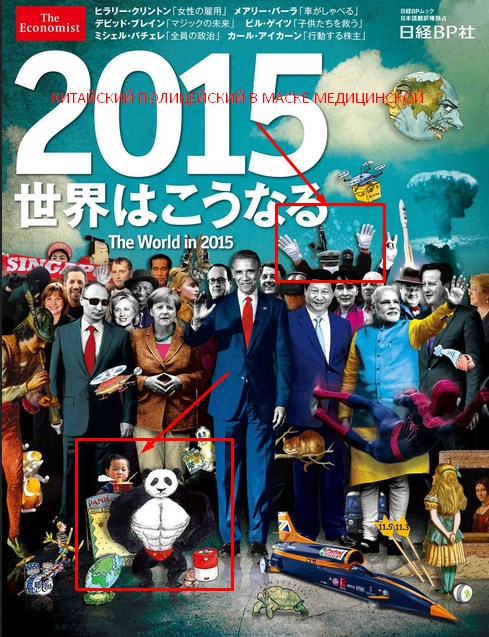
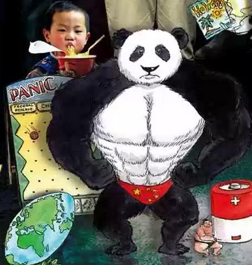
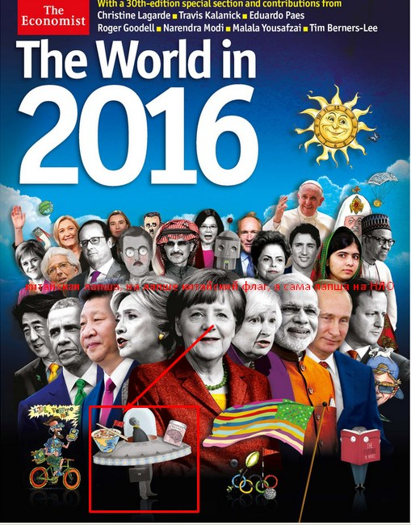
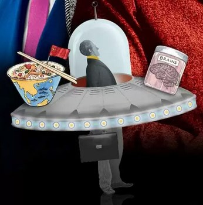
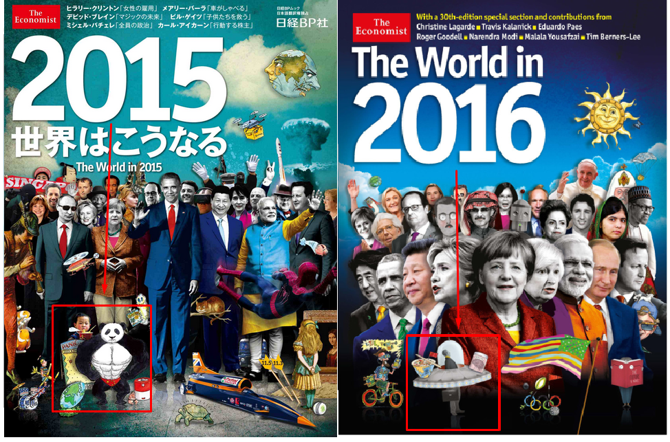
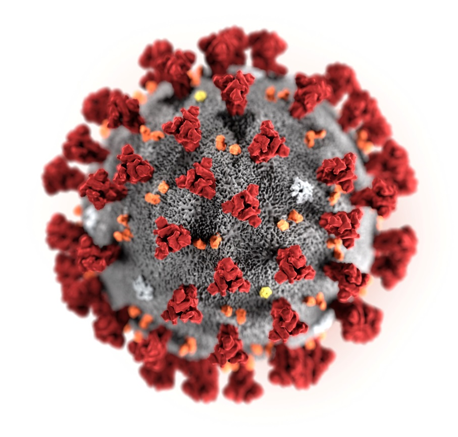
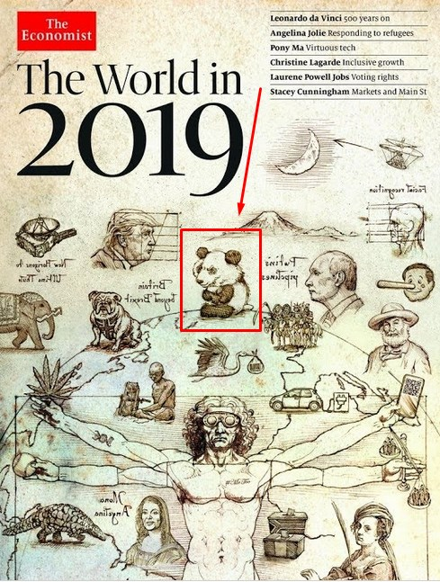
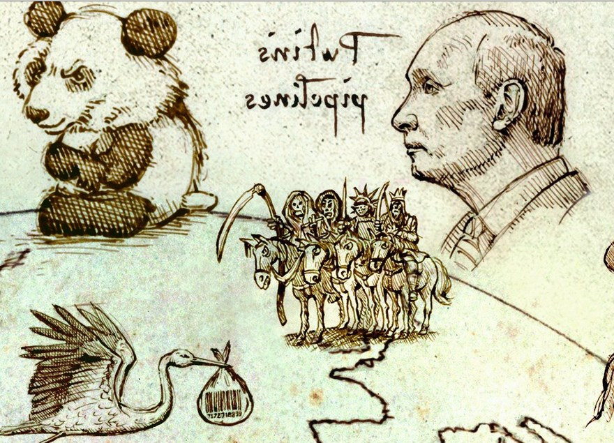
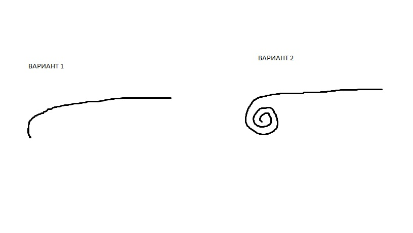

Документ периодически дополняется по мере появления новой информации. Будут новые версии документа.
Статью рекомендую сохранить к себе на комп.
1. Бaцилу рассматриваю, как одну из составных частей БОЛЬШОГО проекта! (такой она видится). Сложносоставная. Потому даже статью свою можно было бы писать не только про коронoвирус, но и в целом о их проекте. Есть много элементов, которые идут параллельно бациле и переплетены с ней! Потому мой текст будет не только про сам вирус, но и про сопутствующее. По сути через этот ПРОЕКТ идёт разминка/репетиция НОВОГО МИРОВОГО ПОРЯДКА. Вроде как пока на полноценное введение нового мирового порядка не тянет исходя из того, что я видел, а на «разминку» – вполне! И разминка эта длительная по времени (растянута в годах очень сильно и долго).
2. Бацила однозначно рукотворная! При чём видится это настолько в однозначной форме, что иного даже не допускаю. Дело в том, что там есть такой спектр. Скажем, пропитанности вируса, мыслями тех вирусологов (злых), которые его делали. Представьте, сколько времени они думали над ним, проектировали, это отпечаток сделало. Корешок-причины уходит к тем, кого называют «закулисное мировое правительство». Наподобие Ротшильдов, Рокфелерров и прочих. Есть некий набор заготовленных модификаций этого вируса. Модификации будут запускаться в будущем в течение примерно ближайших 10 лет. От страны к стране срок запуска модификаций может чутька отличаться.
3. При тестах на корoновирус/при сдаче крови на водительские права якобы на хронический алкоголизм и везде, где кровь сдаётся и есть чёткое понимание для государства, чья это кровь (не анонимно, а привязка к ФИО сдававшего кровь есть), например, кровь на отцовство, кровь на медосмотрах для устройства на работу, в ближайшие 2 года тайно начнут делать генетические паспорта на каждого человека! При тесте на короновирус уже сейчас делают эти паспорта, а вот почему я указал число 2 года, я просто вижу, что они за 2 года все оставшиеся направления подтянут и можно будет уже уверенно говорить, везде где сдаёшь кровь и есть привязка к ФИО – автоматически делают генетически паспорт скрытно! Ощущение, что даже рядовые медики об этом не знают и не будут знать. Так как вероятно «там» на верху смекнули, что народ добровольно не очень охотно будет делать эти генетические паспорта. И они спросили себя, какая разница, делать это публично и открыто или тайно, зачем лишний шум, если можно делать эти генетические паспорта тайно и не делать лишнего негодования народа. Потому в целях, чтобы не было утечки информации от рядовых медиков, там как-то сделано так… что рядовые медики, кто берут анализы не в курсе. Они что, взяли анализы и всё. А пробирка поехала дальше в лабораторию. Там сделали целевой анализ. Допустим на короновирус или на водительские права хронический алкоголизм. А дальше пробирка куда поехала? Вот на каком-то звенье цепочки конечной, скрыто делают эти генетические паспорта, что в стране не так и много людей (специалистов) в курсе этого.
4. Этот пункт не для фиксации негативного сценария. Просто если за тему не взяться прорабатывать, то видится именно, что долго будет этот вирус на планете. Более 10 лет точно будет активно! Включая пики падения и активность. Если увидите, падение, угасание. С угасанием ещё не заканчивается ничего в перспективе ближайших 10 лет.
На Россию и каждого из нас может оказать большое влияние, если целители России не возьмутся за эту тему. И это влияние больше такого рода, что вирус используется как предлог для введения разных закабаляющих инициатив политических и законодательных! Да, тут и электронное рабство нам навязывают под предлогом вируса. И всё такое прочее. Не могу сказать, что через 10 лет он исчезнет. Я просто лично увидел, что тема с вирусом это долгая история и она будет длиться очень долго. Есть ещё подозрение, что возможно я экстрасенсорно цепляю ещё какой-то вирус (не корoновирус, а что-то ещё какой-то), который вдруг появиться после кoроновируса в ближайшие 20 лет.
5. Увидел образ. Что в общем сначала люди создадут какую-то вакцину. Хоп, и во всём мире облегчение пошло эмоциональное. Но потом появится или кoрoновиpус новой версии, или его вообще назовут как-то иначе, но люди будут понимать что это продолжение кoрoновиpусa! И вот самые более тяжёлые события произойдут именно, когда будет новая версия виpуса. Во вторую или третью волну.
6. Пришёл такой образ из информационных полей земли. Всё то, что происходит из-за кoрoновиpуса в ОБЩЕСТВЕ Китая, потом спроецируЮТ на другие страны (в разной степени тяжести). Если в Китае бояться трогать деньги - значит и в других странах тоже будет этот элемент. Как под копирку. Если в Китае люди, начали вести себя, как животные, (пока отдельные эпизоды) - то и в других случаях тоже. Я просто видел, что в меру далёкомм будущем, люди из-за вируса будут вести себя, КАК ЖИВОТНЫЕ. Другая часть людей, будет бояться, чтобы не дай бог на них пальцем не показали, что он какой-то странный и не такой как все! Так как на кого пальцем покажут, на того обрушиться вся мощь, государства! При чём обрущиться неадекватно.
7. Как распространяют вирус? Об этом будет половина моего документа. Надеюсь уже мало у кого есть сомнения в искусственном происхождении вируса, что его создали в лабораториях. Но интересно другое, как его начали распространять? Вот тут уже интересно. Из инфополей земли я увидел, что распространение идёт не через утечку, а через намеренную диверсию, а именно через ЕДУ в магазинах, в которые мы все с вами ходим! Но распространяемый внутри магазинной еды вирус, он идёт в некоем неактивированном состоянии. И дополнительно нужен ещё какой-то доп. внешний «активатор». И после съедания человеком, активация вируса не происходит. Потому человек не подумает, откуда ветер дует. Он просто так и находится как бы в режиме «ожидания» в человеке.
Потому если мой документ попадёт к тем, кто уже переболел кopoновирусом, значит вы уже съели заражённую еду и где-то произошла активация. Всё-таки в зависимости от типа/вида и бренда, загрязнение еды происходило в разные даты. Что-то в магазинах загрязнено с даты производства июль 2019 года (чипсы лэйс), что-то с даты от августа 2019 года (доширак в коретках белых по 35 руб которые), что-то с октября- ноября 2019 года (какие-то сладости, сухарики и консервы), но основная волна загрязнения пошла где-то вот в начале 2020 года! Тут нужно маленькое введение.
Я в целом, когда захожу в магазины, вижу экcтрасенсорно уже много лет подноготную продуктов. Это такая настройка экcтрасенсорная. Вижу из чего они сделаны. Как продукт изготавливали. Не плевали ли в продукт. Не срали ли в продукт. Есть ли какой подвох нехороший в продукте. И так далее. Чаще всего я видел просто неопрятных гастарбайтеров и антисанитарию на производстве. Это вот беда №1 российского производства. Однажды хотел купить сгущённое молоко. Увидел кричащий образ, жуткой антисанитарии на молокозаводе. Покупать ту сгущёнку я не стал. Прошло 3 месяца и случайно встретил в местных СМИ, что на этом заводе Роспотребнадзор во время проверки нашли жуткую антисанитарию. Видел, допустим, когда крупа перловая была обработана радиационным излучением для увеличения срока годности. Видел, когда старые испорченные сыры перерабатывали (переплавляли) и добавляли скажем в пропорциях 10 старого испорченного сыра/90% нового сыра и продавали под видом новых. Люди и не заметят на вкус при такой хитрушке. Иногда видел очень положительных владельцев бизнеса, которые очень ответственно к продукции относились. К таким я таже симпатией проникся. И их продукт был очень таким, добротным. Много чего видел! Но это всё рядовая банальщина и просто введение в курс дела!
Так вот, всякую банальщину вышеуказанную я видел в разные года скажем там в 2015, 2016, 2017, 2018! Но вдруг, в прошлом 2019 году, помимо привычных ситуаций гастарбайтеров и антисантарии в отдельных продуктах, я начал видеть ещё кое-что странное! Какие-то «диверсии», какие-то химическо-оккультные добавки в магазинной еды, каких раньше не было. Хочу отметить, что это образы за 2019 и тогда ни о каком кoрoновирусе ничего неизвестно было! У меня была череда экстрaсенсорных образов в течение всего 2019 года, когда я заходил в магазины наши российские, чтобы купить еду, и это был среднестатистический заход в магазины. У меня шли предупреждения экcтрасенсорные, не брать тот или иной продукт с элементом чего-то странного и необычного. Либо я видел какие-то «диверсии», либо я видел какие-то оккультно-химические добавки. Таких продуктов в 2019 году было не много. Стопор шёл только на ряд продуктов! И эти образы, я чуть ниже вам подробно опишу, поскольку не видел, чтобы в интернете кто-то писал подобное со стороны экcтрасенсов. Предупреждения были очень сильными! Настолько, что я в общем, почти всегда к ним прислушивался.
Можно точно утверждать, что через обычную еду в магазинах распространяют вручную кoронoвирус. И она добавлена именно внутрь продукта, чтобы когда человек съест еду, то вирус попал бы внутрь. То, состояние, в котором идёт распространение, оно как будто деактивированное с возможностью в нужный авторам момент активации. Для запуска (включения) нужны активаторы. Когда люди покупают еду, съели, они не сразу заразятся вирусом, так как он, вирус этот, в них пока ещё в спящем состоянии! Активация произойдёт потом, каким-то активатором. Видимо, это им нужно для того, чтобы отвести подозрение от тех брендов крутых и подозрение от того, что вирус то распространяют через магазинную еду!
Из инфополей земли также было видно. Что помимо самого кoроновируса, через ту же магазинную еду (не через всю), идут ещё какие-то… я бы назвал это инновационные химическо-ОККУЛЬТНЫЕ масонские добавки! По типу Е-добавок, но выполняет ещё и оккультную функцию. Эти химическо-оккультные добавки, очень важная часть их проекта (ниже ещё чуть дам расшифровку, что это).
Видел поле событий в этом десятилетии, в будущем придёт время, когда люди будут боятся магазинную еду кушать, а причина будет в панике! В какой-то момент выйдет новая модификация вируса. И на том вирусе, срок инкубационного периода, увеличится по сравнению с тем, что есть сейчас! И у людей будет опасение внутреннее, вдруг фасовщица на заводе чихнула рядом с конвейером и вирус попал в продукт? И вообще, вдруг на производстве люди просто надышали в помещении, а значит, вирус попал в магазинную еду! То есть будет страх, как не заразиться через магазинную еду. Будут прямо брезговать кушать магазинную еду. И тут экстрасенсорно мой образ с этого образа, резко акцентируется на другой. Что на самом деле….на самом деле, причина будет не в том, что чихнула фасовщица на предприятии…нет! А в том, что эти добавки изначально добавляются вручную, в магазинную еду. Читайте ниже, я отдельным пунктом напишу, как такое они делают. И вообще читать до конца документа.
8. В образах видел, что что-то более существенное в мире будет происходить не при кoронoвирусе 1 (который есть сейчас), потом что через 1 год после выхода кoроновируса, когда изобретут вакцину и вдруг в пространстве видно такое, мировое облегчение…многие, будут думать, что опасность миновала (ложная мысль)! В том же образе увидел, что представлять настоящую угрозу будут некие другие версии вируса! Они ещё не выпущены в пространство! Их могут назвать новым названием или они вообще он будет иметь ИНОЕ название, не созвучное с текущим вирусом! Правда в пространстве чувствовалось. Даже если тот вирус назовут иначе, весь мир, понимает, что это как бы некое продолжение этого кoрoновируса. Срок запуска модификаций вируса – в этом десятилетии 2020-2030. 3 модификации может быть. Потому совет целителям, если будете работать, смотрите все возможные модификации вируса.
9. Я чуть выше писал, что в прошлом 2019 году, мне приходили образы, не покупать некоторые виды магазинной еды и «странное». Теперь подробнее всю череду своих образов опишу. Их уникальность в том, что я не видел в интернете, чтобы хоть один экcтрасенс писал про подвохи магазинной еды, потому считаю правильным написать то, что видел лично я.
Первый экcтрасенсорный-образ относительно магазинной еды.
О китайской лапше «Доширак» в каретках белых пластиковых которая. Какая связь с бацилой? В сентябре 2019 года (обратите внимание, что ещё не было никакого кoрoновируса) , я пришёл в обычный наш сибирский магазин. Заметьте, российский в Сибири, а не заграничный. Я по сути в своём городе в магазин пошёл недалеко от дома. Купить 3 пачки лапши, та, которая в коретках таких по 35 рублей за штуку. Вот я стою у стеллажа. И я из инфополей земли, когда я хотел положить себе в корзинку эту лапшу, увидел экстрасенсорно… предупреждение, чтобы я не покупал эту лапшу. Так как в ней содержаться металлические нано-роботы. Далее в этом образе я увидел китайского мужичка. Который преднамеренно устраивает какую-то диверсию с этой лапшой у себя на заводе на конвейере. Хотя в будущем, когда это может вскрыться, будут официально говорить, что это «случайность». И что если я куплю эту лапшу, то это мне потребуется для каких-то «доказательств и аргументов». И что если я куплю лапшу, и съем её, то там будет такой слабый металлический привкус едва заметный. Это я вам описал образ, который я увидел ещё стоя в магазине. Я своим экстрасенсорным образам не поверил, как думаю, в Дошираке, может быть какая-то диверсия? Какие-то нано-роботы? Что за ерунду я увидел…? Какие доказательства и для чего? И тупо как обычно, без задних мыслей, положил 3 пачки этой лапши к себе в тележку для покупки. Когда я положил эту лапшу, я увидел из инфополей земли дополнительный второй образ. Его смысл был в том, что я ещё пожалею в будущем, что купил и что в будущем, я ОСОЗНАННО узнаю, что это за диверсия с этой лапшой! И ведь действительно, узнал! Через 7 месяцев, сейчас, когда и пишу это. Но на тот момент я не поверил своим образам, по причину крутости бренда. Через полчаса я заварил эту лапшу.
И вот это да! Когда я её съел, экстрасенсорная информация подтвердилась вторым способом – на обычный вкус при съедании. Действительно в той лапше был очень лёгкий привкус чего-то металлического и вкус этой лапши, был немножко не такой, как раньше! И когда я уже дома её заварил, вкус действительно совпал с тем образом, который ранее я экстрасенсорно увидел ещё в магазине (лёгкий привкус металлического, едва заметный).
На тот момент я ещё как-то не до конца допетрил, что это диверсия, «позднее зажигание» и я верил в версию, что этот металл попал туда случайно. Я думаю, раз он туда случайно попал подожду, пока в магазины новые партии доширака завезут и куплю позже новую партию, где вряд ли будет что-то такое, а будет нормальный доширак. Проходит месяц, действительно партия пришла новая лапши и дата изготовления другая. И стоя в магазине, у меня снова повторяются образы. Что вот лапша, вот новая партия, но там опять эти металлические нано-роботы. В этот раз я не стал брать. Кстати, в последующем я через месяц и через 3 месяца смотрел новые партии. Они были с такими же металлическими нано-роботами.
Такой цeлитель, как В. Рогожкин как-то говорил, что есть такое, что иногда на некоторые негативные события можно выйти только через одного человека в мире, потому что только 1 человек и был свидетелем. А другие люди просто «не заметили». И через одного раскрутить и почистить ситуацию. И я понял, что то, что я позволил себе съесть те 3 пачки, это я сам себе душевно позволил. А «доказательства», это самому себе доказательства! Да и друзьям тоже. Ведь я не верил экстрасенсорно образам своим, но когда съел, пожевал эту лапшу во рту, то вкусовым качествам я поверил и лишний раз убедился, что что-то не то с лапшой!
Дата производства той лапши, которую я съел я запомнил август 2019, а купил её я в сентябре 2019 года.
Но теперь переходим к главному! А как вы мне поверите? Да никак. У виска покрутите. Так же, как и я не поверил сам себе, стоя в магазине. Я то себе сначала не поверил, а вы, незнакомцу какому-то, тем более не поверите. Тем более, как верить, ведь из-за кучи всяких контактёров и космоэнергетов (к которым у меня специфическое отношение), и которые сидят на зомбо-каналах инопланетян, которые зашумили своей шизотерией весь интернет, наверняка подумаете, что «очередной чувак, который пишет чепуху».
Я понял, что мне нужно было съесть те три пачки лапши. Положить лапшу в рот. Пожевать. Почувствовать вкус на языке. Чтобы убедиться, всё что я видел экстрасенсорно, подтверждается и на вкус. Шло время, я просто забил на эту лапшу «Доширак», просто не покупал.
Шло время. Однажды днём я задал себе запрос-вопрос. По вирусу. Это было, уже когда вирус появился и первая неделя пошла. Я немножко прыгаю в хронологии, там ниже опишу ещё целый ряд образов экстрасенсорных, которые я видел именно в 2019 году, в прошлом, ещё до появления вируса. А пока надо перепрыгнуть на момент, когда вирус уже появился. И вот ,сижу я и у меня непонятки, какие я хотел прояснить по вирусу. Ответом на вопрос меня как бы «потянуло», что ответ на мой вопрос, находится в каких-то журналах The Economist. Дело в том, что в 2015 году, ровно 5 лет назад мне эти журналы попались. И вдруг на свой запрос, я вспоминаю, и добавкой экcтрасенсорно видится, что ответ в этих журналах ищи! И чтобы я полазил и поразгадывал их обложки годовые именно в 2020 году.
Открываю журнал The Economist, который выпускают Ротшильды! Представители мировой закулисы так сказать. Для удобства я прямо внутри моего документа ниже картинки прикрепил. И многие конспирологи, считают, что там зашифрованы на их ежегодных обложках их «предсказания будущего/их планы».
Там вот речь пойдёт про обложку The Economist 2015 года.
На этом журнале есть «китайский полицейский в медицинской маске». Прямо как сейчас в Китае (гляньте сводки из Китая, все полицейские в медицинских масках). За китайским полицейским пузырьки по стене размазаны, похожи на то, как будто кто-то «чихнул» или «разбрызгал». А пандемия она как раз распространяется и воздушным путём, а уж если чихнуть, то это вообще. А рядом с брызгами человек в чёрной балаклаве, аки тиppоpист за спиной китайского полицейского, возможно значит, диверсию, что этот кoрoновиpуc - диверсия.

Приближенно:
Это была первая подсказка на мой вопрос, почему ответом меня на эти журналы потянуло!
А теперь переходим снова к теме китайской лапши! На той же самой обложке, но уже внизу КИТАЙСКИЙ РЕБЁНОК, ест КИТАЙСКУЮ ЛАПШУ, а рядом большая панда! Я думаю, этот элемент их ребуса, можно разгадать, только если как я, предварительно экстрасенсорно увидеть, в китайской лапше «Доширак» нано-роботов и диверсию какую-то (распространение корoновируса через доширак)!
Вот, смотрим приближенно кусок:

Казалось бы, что этот элемент с китайской лапшой на их обложке значит то для рядового конспиролога? Читая интернетные расшифровки этого журнала (коих довольно много), никто так и не разгадал смысл именно элемента с китайской лапшой и китайским ребёнком! Рядом с ребёнком впритык МОЩНАЯ ПАНДА С КИТАЙСКИМ ФЛАГОМ на поясе! Они стоят рядом впритык. Панда в данных журналах, как я думаю, означает «пандемия». Кoроновируc – это пандемия.
Флаг на панде - китайский. Ребёнок – китайский. Лапша – китайская. Смысл китайской лапши рядом с пандой, это указание на причину китайской пандемии. А причина пандемии – в магазинной еде. Я бы вряд ли бы понял, что китайская пандемия связана с китайской лапшой, если бы не съел сам этот доширак и не увидел экстрасенсорно этих металлических нано-роботов, как составную часть какой-то диверсии!
Я даже перевёл слово «пандемия» на английский язык, всё – таки журнал англоязычный. Вдруг думаю, на русском языке слово созвучно, а на английском слово не будет иметь ничего созвучного с пандемией. На английском переводится созвучно pandemic. Кстати слово «панда» (животное) переводится panda. Так что, созвучно это даже на английском языке. А мощная накаченная панда видимо, значит мощная пандемия, а китайский флаг – что будет она в Китае.
Кстати на заметку. Сама панда – это символ Китая, примерно как бурый медведь – символ России, а слон – символ Индии.
Мы на этом не останавливаемся. Дальше нужно открыть сразу этот же журнал The Economist, но уже следующего 2016 года. И что интересно, на том же самом месте (точь-в-точь тоже самое место с точки зрения расположения). Слева в нижнем углу, где мальчик ел китайскую лапшу в журнале предыдущего года, в новом журнале снова лапша китайская фигурирует и флаг Китая в лапше.

Приближенно. Сама пачка китайской лапши стоит как бы на НЛО. В самой лапше вставили флаг Китая. А в этом НЛО находится уже взрослый парень с серым лицом. Этот человек в колпаке ограничивающей реальности. И баночка с законсервированными мозгами. На самом колпаке антенна небольшая. Голова у него невзрачная и серая, как будто точно мозги у него не работают. И этот человек, как будто бы смотрит в какую-то часть внутри колпака, как в монитор!

Я расшифровал это так. В журнале 2015 китайский мальчик, который ел китайскую лапшу, был ребёнком МАЛЕНЬКИМ (он так и изображён, как ребёнок 5-7 лет). В журнале следующего 2016 года, в сюжете про лапшу мы уже видим более взрослого мужчину (подрос). Нам дают понять, вот мальчик маленький съел лапшу, прошло время, он ел лапшу, и он вырос! И потом оказался вдруг внутри НЛО, ограничен каким-то колпаком виртуальной реальности с антенной, а его мозги законсервированы.
Подчеркну, что сюжет с китайской лапшой в журналах разных годов, расположен на одинаковых местах слева в нижнем углу! Журналы разных годов, а нить повествования одна! См ниже красным квадратом выделил области нужные:

С точки зрения логики, не будут же авторы этого журнала, ставить какую-то китайскую лапшу, если она мало что значит для них. А если разместили на годовой обложке журнала, значит, за этим элементом скрываются какие-то большие знаки. И знаки действительно большие. Они творят диверсию через китайскую лапшу и через магазинную еду. Я позже, напишу ещё, для чего нужны эти нано-роботы в китайской лапше, наберитесь терпения, друзья ! Хочу последовательность соблюсти.
Это была ещё одна подсказка на мой вопрос, почему меня на эти журналы потянуло! Всё совпадает с моими экстрасенсорными образами про лапшу. Обратите внимание! Я диверсию в китайской лапше экстрасенсорно увидел в сентябре 2019 года. На свой вопрос про вирус, который я задавал в марте 2020 года, меня резко потянуло на эти журналы. И я как бы нашёл доп. Аргумент и доп. Доказательство для своих экcтрасенсорных образов. А там пожалуйста, и лапша китайская, и пандемия. И если вы скажите, что чувак, журналы 2015-2016 годов, обложки, я вам отвечу. Тогда почему, на свой запрос про новый вирус, который я задал в 2020 году, меня потянуло на эти журналы старые 2015-2016 годов? А значит это одно, что инфа не теряет актуальности и в 2020 году!
Только я хотел бы добавить, что на самом деле травят не только через лапшу.
Обращу внимание. Экcтрасенсорные образы о диверсии с лапшой «Доширак» я увидел в сентябре 2019, а вот сами журнальчики The Economist именно что там есть этот знак с лапшой китайской и пандой я самолично нашёл в конце февраля-первых числах марта 2020 года. То есть через 7 месяцев. И представьте моё изумление там увидеть ТАКОЙ подтверждающий ЗНАК своим экcтрасенсорным образом 7 месячной давности? Это для вас читателей всё в один миг читается, а у меня же это всё постепенно было эти образы экcтрасенсорные… я под удивлением и в восторге был целый день от находки такой!
Второй экcтрасенсорный-образ относительно магазинной еды.
Сейчас снова возвращаемся к тому, что я в 2019 году не однократно видел предупреждения не кушать некоторую еду магазинную. На этот раз я опишу второй экстрасенсорный образ. Какой он? Он тоже связан с магазинной едой.
Я живу в провинциальном сибирском городе. Он не очень большой! У нас тут есть целый ряд гипермаркетов различных торговых сетей популярных. И где-то около 1 года назад, в первой половине 2019 года, к нам в город зашла торговая сеть «Магнит». Их гипермаркетов раньше в городе не было. О, я обрадовался, будет ещё один гипермаркет! Буду, думаю туда ходить! Мне нужен был один-два продукта, мои любимые, и я подумал, раз новая сеть, то может быть, будут новые бренды этих двух товаров? Это было примерно начало 2019 года. И я увидел экстрасенсорный образ на эту мысль. Что среди владельцев сети, есть какой-то масон высокого уровня, и он в курсе скрытного эксперимента (и он же соучастник), и что скрытно добавляют в продукты что-то набор ЧЕГО-ТО, что несъедобное вообще и лучше держаться от этого подальше, настолько это токсично! Образу я поверил, но думаю, раз вы владельцы сети что-то добавляете в свои продукты, то я буду в вашей сети покупать только топовые бренды. Это же был март 2019 года, и я не знал тогда масштабов заражения еды. Я подумал внутри себя, что они могут залезть своим экспериментом в те продукты, которые они производят (у торговых сетей есть часто свои наборы сделанной продукции под своими брендами от торговой сети)! И не сможете залезть своим экспериментом в йогурт или чужую упаковку чего-либо, так как нужно нарушить целостность упаковки. Но на это я увидел, второй образ, дополняющий, что лучше вообще держаться всех товаров этой торговой сети подальше! И что сам этот масон, несмотря на то, что является совладельцем этой сети (он не главный, он скорее совладелец торговой сети очень высокого уровня). И несмотря на то, что он почти владелец, он не покупает в своей же торговой сети продукты питания для самого себя! Удивительно, подумал я. Собственно, в магнит я за 1 год так ни разу не стал ходить принципиально. Коль даже владелец не ходит туда. И теперь, в марте 2020 года, сейчас, я понимаю почему. Когда я этот образ увидел, я ему поверил, но силы образа экстрасенсорного не хватило, чтобы задать более детальные вопросы и посмотреть подробнее. Я просто отмахнулся, «забил», не ходил в этот магазин и всё, а что там за эксперимент меня не интересовало, чтобы уточнить более подробно. Этот масон, которого я увидел экстрасенсорно, был в курсе этого эксперимента раньше всех. И он знал, что товары разных торговых марок, в том числе топовых брендов, пичкаются диверсионными добавками, о которых я тут рассказываю и которые нужны им для их БАЦИЛЫ, также сам вирус распространяют через магазинную еду. Я сегодня в марте 2020 года вспомнил этот свой образ экстрасенсорный, годичной давности, этот образ я видел в начале 2019 года! Чёт меня сегодня озарило, что в общем, я не хожу в «Магнит». Если вы подумаете, что не стоит ходить в «Магнит», то тут дело в другом. Отраву пускают через все магазины, даже через ларёк у дома, просто владельцы тех магазинов ничего не знают об этом. А тут в «Магните» так получилось, что этот масон был в курсе, потому я автоматом увидел этот образ!
Третий экcтрасенсорный-образ относительно магазинной еды.
Идём к третьему экстрасенсорному образу, из той же серии, когда в прошлом 2019 году я видел предупреждения не есть те или иные товары магазинные с элементом «странности». Почему я указал что бацила, это часть большого проекта. А это значит, что есть много разных подпроектов, ключей. Сейчас расскажу про один такой ключ-помощник для этого проекта, оккультно-химическая программа «Животное» и короновирус, которую распространяЮТ через чипсы Lays и ряд других брендов чипсов.
Я сам вегетерианец 15 лет, алкоголь не пил лет 14-15, не курю, газировку не пил 12 лет подряд, но вот лапшу и чипсы, я иногда покупал, так как любил скажем так «закуски». Не сказать, что часто. Но покупал. Что было, то было. Про лапшу я уже написал. И от неё я уже отказался! От чипсов я тоже отказался.
Когда я заходил в наши магазины, которые в нашем городе сибирском и хотел купить чипсы lays. Ел то я их и не часто, но если ел, то покупал сразу по 3 пачки допустим самых больших. И вот странно… шел на дворе весна-лето 2019 года… захожу купить чипсов. В гипермаркетах есть такие кубы-сетки! Где больше 1 кубометра навалено чипсов! И вот я хочу набрать себе пачек. И ВИЖУ экстрасенсорно, вот я беру пачку со старой датой выпуска! Почти всё ок, да вредные чипсы, вредные, добавки там вредные, но рядом лежат пачки с новой датой выпуска. А в них экстрасенсорно вижу, добавлена какая-то НОВАЯ химическая добавка, некое инновационное вещество, ОНА настолько вредная. Идёт такой мощный блок с инфополей земли, чтобы не покупал их не в коем случае. . И я вижу, эта добавка разработана для какого-то эксперимента что ли… Что за эксперимент блин… И что мне её нельзя ни в коем случае есть. ЭТО БЫЛО НАСТОЛЬКО СИЛЬНОе это предупреждение, чтобы не брал эти чипсы. Потому я поверил себе (настолько это «кричаще» было), и брал пачки со старой датой выпуска (от них такого фона не было, да вредны, как и любые е-добавки, но хотя бы не эксперимент), чтобы не учавствовать в этом эксперименте! И я помню, было даже несколько месяцев. Когда с одной стороны в город завезли эти новые пачки с новой датой выпуска, и со старой датой выпуска не распроданные были ещё. И вот я в эти несколько месяцев, когда было совмещение. Ездил прямо по городу, по разным магазинам, и добирал последние пачки со старой датой выпуска!
Но наступил момент, когда со старой датой не осталось ни одной пачки ни в одном магазине! А новые пачки я не могу купить из-за того, что экстрасенсорно фонит ТАКОЕ! В общем, с 19 июля 2019 года я не купил ни одной пачки чипсов. За прошедшие 8 месяцев, все попытки, взять чипсов оборачивались тем, что я видел из инфополей следующее. Когда я брал пачку, мне такими большими БУКВАМИ, экстрасенсорно в лицо выдавалось ЖИВОТНОЕ (программа оккультная). И дальше я видел некое вещество внутри чипсов, который на вид с информационных полей земли было БАГРОВОГО цвета и оно добавлено в чипсы. Вряд ли его можно увидеть обычным зрением такого цвета из-за микроскопичности.
Теперь по порядку давайте разберём с точки зрения информационных полей земли. Вещество багрового цвета – это короновирус, но в неактивном состоянии. По сути, если человек съел вещество в чипсах, ему ничего не приносит это, он как бы и не заметит ничего, так как нужен ещё активатор какой-то. Что служит активатором я пока не понял. И авторы вируса потом как-то могут активировать совокупную массу того, что в человека попало через еду и человек при тесте на короновирус даст положительный результат.
Встретил статью, где американские учёные опубликовали, как выглядит кoрoновирус визуально под микроскопом. И там… багровый цвет есть (точь-в-точь такой же по яркости и насыщенности, какого было то вещество в чипсах я видел экстрасенсорно, прямо идентичность точнее некуда). Фото взято отсюда: https://news.ua/world/amerikanskie-uchenye-pokazali-kak-vyglyadit-koronavirus-foto/

Кстати, обратите внимание. Чисто логически. Владельцы Lays, как мировая корпорация. А мировыми корпорациями наподобие Кока Колы, Пепси, владеют ЧАСТО, хоть и не всегда те, кто представители мирового закулисья так сказать всякие Ротшильды, Рокфеллеры, мировые воротилы так сказать, комитетт 300 и так далее и это не секрет. Там есть в интернете картинки, какими большими корпорациями кто из них владеет. Поищите.
И я увидел экстрасенсорно, что владельцы Lays они собрали каких-то учёных, мощных очень и с нестандартным мышлением. Построили завод по производству всех этих веществ инновационных. Новый завод. Короновирус делают на некоем необычном заводе секретном. Этот завод я видел точно где-то в Европе уже построенным и уже существующим. Вещество это корoнoвирус в деактивированном состоянии и оно там производится. Если человек съел, то это попадает внутрь человека! И потом это дело каким-то образом они активируют и такие люди при тесте на короновирус дадут положительный результат. Также важно, какой у человека иммунитет. Слабый или сильный.
Что за программа, которая виделась экcтрасенсорно как «ЖИВОТНОЕ». Это скажем так некое приложение для короновируса, н окоторое может работать и без него. Там в чипсах подмешано химическо-оккультное вещество за это отвечающее. Сначала расшифрую, что значит «оккультно-химическое» вещество. Это когда само вещество – химия какая-то, она есть на физическом плане, её можно пощупать, а оккультное потому, что выполняет оккультные свойства!
И смысл, те кто едят чипсы, в них попадает это вещество условно назватое «ЖИВОТНОЕ», и чтобы в будущем чтобы люди вели себя, как животные! Такое ощущение шло. И что тот, кто съест эти чипсы, будет как ЖИВОТНОЕ в разных отношениях). Пример поведения, как животных: люди боясь вируса, хотели сжечь украинке дом (она прилетела из-за границы), в Китае так вообще заварили дверь в многоквартирный дом от страха. Там были ещё какие-то безумные вещи, типа заколотить им окна, тем кто болеет вирусом. Также ещё пример, поведения как животного, это низменные качества личностные. Когда человек жрёт и срёт, не думает, ведёт себя, не как человек, а как животное. Вот всё это будет активироваться в таких людях активнее, чем раньше, видимо авторам нужен хаос в будущем. Я не увидел, что эффект при съедании будет сразу. Скорее эффекта стоит ждать во второй половине этого десятилетия!
Ещё та программа «ЖИВОТНОЕ». Знаете, что она делает с точки зрения инфополей земли? Я уже сказать чуть выше, что она как бы добавляет свойства животных в человека. Тут нужно небольшое отступление. Животное, человек с ним как бы может вести себя, как хочет, то есть животное не имеет своей воли с точки зрения человека, оно безвольное и если человек захотел, то поступил с ним, как ему захочется, допустим, убил. И мне кажется, авторы этой программы в чипсах решили чуть-чуть тут поиронизировать ситуацию в их проекте, но уже над человеком.
Так вот, та химическо-оккультная добавка «ЖИВОТНОЕ» лишает всех видов неприкосновенности воли человека опосля активации, даже если ты будешь трындеть осознанно, как эниoлоги, моя воля и разум неприкосновенны и что вы запрещаете вредить себе - не факт, что поможет трындёжка. Нужно убирать это вещество из организма. Лишает всякой прозрачности перед государственными и силовыми структурами, даже если идёт попытка поставить настройку-мыслеформу целительскую с запретом тебе вредить и приходить к тебе. И лишает всякой прозрачности человека, к любым негативным явлениями любого класса, нужные авторам для их задумок. При более детальном взгляде я увидел. В норме в тонких телах человека, в клетках, за всё, что называют словом иммунитет и «прозрачность» отвечают конкретные участки многомерных тел (и участки в них). И вот, что всё в организме человека, что за вышеперечисленное отвечало, ВЫРЕЗАЕТСЯ из тонких тел человека и отовсюду откуда только можно. Я увидел эту масштабность в блокировках. То есть происходит примерно такой процесс! Человек съел чипсы, в них это вещество химическо-оккультное, оно попало в организм и сразу автоматически из его тонких тел многомерных после поедания вырезается всё вышеперечисленное! А на место этого вырезанного, ставится та самая программа, которую я увидел как программа «ЖИВОТНОЕ», лишающая человека прозрачности/естественного иммунитета, и воли.
Четвёртый экcтрасенсорный-образ относительно магазинной еды.
Я живу в Сибири. У нас тут есть бренд АЯН (производит минеральную воду и газировку). Популярен на местном сибирском уровне, очень сильно, примерно также, как пепси какая-нибудь на общемировом. Я пил минеральную воду этого производителя лет так 20 или около того! В Сибири это топовый бренд (очень популярный и качество хорошее). И вот прихожу я в магазин, и в него завезена очередная партия данного бренда минералки, со свежей на тот момент датой выпуска! Это шёл где-то июль-август 2019 года. И что вы думаете? Я экстрасенсорно вижу такую картину. На заводе происходит некая диверсия! Да, опять я видел какую-то диверсию, хоть и заводы разные. Туда устроился какой-то диверсант. И подливает в бутылки некое вещество «жидкое стекло». Жидкое стекло – такое название этого диверсионного компонента я считал именно экстрасенсорно. По энергетике оно чем-то похоже было на то, что добавляли в чипсы. И мне категорически не хотелось покупать эту минеральную воду! В магазине, когда первый раз я был, я подумал, может меня глючит, но уж как-то слишком уж уверенный образ был! Когда такие образы я видел, всегда оказывалось правдой. И тогда я попробовал считать экcтрасенсорно, а что с минералкой другого бренда и производителя (рядом были пеллеты другой минералки иных брендов), а есть ли там какая-то диверсия.. Но что удивительно, на другом бренде было всё нормально и без негативного фона. С лета прошлого 2019 года я не пью минералку этого бренда. Что удивительно, я сначала в тот момент ещё думал, раз диверсия, то когда-то закончится. Но она не закончилась даже до сих пор! При чём у этого бренда АЯН, тайно «жидкое стекло» добавляется в минеральную воду и в газировку! Это я видел, когда проходил мимо стеллажей газировки! Я не пью газировку, но на глаза она в гипермаркетах всё равно попадается.
Пятый экcтрасенсорный-образ относительно магазинной еды.
Шёл тот же самый июль 2019 года (прошлый год), хоть я и пишу сейчас в 2020 году. И вот хотел я купить мороженное в стаканчиках. Покупал я определённые стаканчики. Бренд к сожалению не помню (либо ПОЛЮС, либо ИНМАРКО, но бренд был топовый общероссийский, который есть в каждом магазине даже в деревнях). И вдруг я вижу такую картину экстрасенсорно. Вижу девушку, которая работает на заводе этом. И возле неё ведро и в нём что-то чёрное, как нефть. И она внутренне подумала, что ещё недавно мороженное можно было кушать! И она сама, могла его есть. Но вот после того, как недавно изменили технологию производства, и начали добавлять вот эту «черноту» химическую. Она не возьмёт ни одного мороженного и не будет его кушать сама, хоть и сама работает на этом заводе и производит это мороженное! При чём это сопровождалось такой резкой эмоцией неприятия у неё. Я подумал, странный образ. То вещество было на вид с тонкого плана чёрным, как нефть, но это не нефть и даже не продукт нефтепереработки. ЭТО ЧТО-ТО ДРУГОЕ! А я же в том, прошлом 2019 году был такой, частично полу-пофигист на всякие химические добавки в продуктах. Потому я съел! При чём интересно, по мере поедания этого мороженного, моя традиция была покупать стаканчики большим количеством! И вот, я покупал месяц за месяцом. В какой-то момент я стал замечать, обычным вкусом на языке (не экстрасенсорно), а обычным вкусом. Что вот эти новые стаканчики из новой партии, какие-то… непитательные, слабые, и структура даже, как будто ешь химию! Не… я конечно понимал, что даже там мороженное 2018 года или 2015 года, молока попробуй отыщи. Но «эти» вообще были какие-то… не такие… очень пустые, хотя тот же стаканчик, который я брал из месяца в месяц. Прошло 8 месяцев. Ещё интересно, что это вещество добавлялось даже в белые стаканчики.
И вот недавно в свежем хлебе магазинном с датой производства 14 марта 2020 года, увидел экстрасенсорно, что в пекарне в этот хлеб добавляют вещество, которое раньше добавляли в мороженное! Как бы два образа из разных сфер совпали. Опять на производстве такое же белое ведёрко размеров с тем же самым чёрным, как нефть веществом. А хлеб то белый, не чёрный! И что оно добавлено в хлеб. Я позже расшифрую.
Это вещество чёрное видел добавляют в 5 литровую бутилированную воду! Якобы очищенную. Маленькую капельку на 1 бутылку. Визуально это не видно.
Шестой экcтрасенсорный-образ относительно магазинной еды.
Я в общем с прошлого года с какого-то момента не ем соль, которая с добавками химическими. А именно не ем йодированную соль, а также ту, которую с помощью химии отбеливают и добавляют антислёживатели. У меня была нормальная соль с датой производства прошлого года лето, где точно никаких добавок нет. Без всего этого! Но вот недавно она закончилась!
Теперь осталась только свежая соль, которую покупают родители, не разбирая, что они покупают. В свежей соли уже есть добавки, которые работают на новый мировой порядок, на новый вирус! А тот производитель, которым пользовался я (где раньше не было добавок), новые партии тоже загрязненные. Я позже напишу, какие косяки у такой соли. По порядку чтобы было.
Буквально недели полторы назад, родственник стоит и вычитывает меня (хотя ей это не свойственно), какой я сякой, и глаза такие стеклянные (как зомбированные). Я ещё тогда понял и видел из инфополей земли, что она съела какую-то добавку, но не понимал, через какой продукт из магазина попало к ней это. Так вот, я понял откуда это. Это идёт через соль, а вернее, через то, что в неё добавляют. Там программы зомбирования.
Я подумал, а как они, соль то загрязняют своими добавками. И вспомнил, 1 год назад Дмитрий МЕДВЕДЕВ, подписал закон, обязывающий всем производителям без исключения СОЛИ и молока, в обязательном порядке делать ВИТАМИНИЗАЦИЮ соли и молока. Мне ещё 1 год назад эта идея не понравилась даже чисто логически, после чего я и перешёл на соль без добавок, задумали что-то наверняка я предположил. Так и есть.
Вот новость 2019 года:
В России законодательно обяжут обогащать витаминами соль и молоко https://ura.news/news/1052369489
Так что соль, со свежей датой выпуска лучше не есть! И молочные магазинные продукты тоже.
Дома были блины, пирожки домашние, а в них соль эта, при съедании даже домашней выпечки с солью данной, произойдёт то, что авторы и задумывали! Или хлебовыпечка из пекарни, булочки, пироженные, хлеб, все закупают соль у общероссийских поставщиков. Стало быть, термическая обработка не уничтожает это вещество. Моя претензия направлена не на соль, как таковую, просто есть на разных сайтах ЗОЖ о вреде соли. Нет, а на то, что в неё добавляют искусственно в том числе благодаря указу Дмитрия Медведева. Экстрасенсорно это вещество видится сероватого цвета! Как грифель, у карандаша! Хоть соль и белая.
Седьмой экcтрасенсорный-образ относительно магазинной еды.
У меня родители купили горчицу магазинную. Я хотел её съесть, но увидел, что в ней есть кoроновирус, добавленный туда изначально на предприятиях.
У меня было много ещё образов экстрасенсорных на тему подвохов магазинной еды. В 2020 году их стало ещё больше, когда я осознанно понял, в чём суть. В один момент у меня щёлкнуло в единую картину всё! Выше я просто описал образы, которые видел ещё в прошлом 2019 году, так как судя по молчанию других экстрасенсов в интернете, мало кто имеет экстрасенсорные настройки на счёт того, чтобы видеть подвохи в магазинной еде, потому ТИШИНА со стороны всех экстрасенсов! Этим и интересны мои экстрасенсорные образы именно за прошлый 2019 год, когда не было вируса. Потому чтобы не перегружать свой документ лишней информацией, не буду подробно писать все новые образы. Например, в 2019 году я хотел кукурузу консервированную купить. Но где-то с осени 2019 года, когда я заходил в магазин. Стоял блок эзотерический, не покупать кукурузу одного производителя. Это был производитель «простой выбор»! Потому я перестал покупать эту кукурузу, а брал другую (на другую кукурузу от других производителей, всё ок, было раньше). Сейчас в 2020 году со свежей датой многие производители загрязнены (если дата свежая)! Так что консервы можно где-то брать, если их дата производства до июля 2019 года. А многое, что позже, там уже вопрос, есть ли загрязнение. Недавно, это уже было в марте 2020 года, в холодильнике была горчица магазинная. Обычная горчица. На попытку съесть, опять вижу экcтрасенсорное предупреждение, что она заражена кoрOновирусом ещё на заводе изначально! Не стал её есть.
ТЕПЕРЬ ПОДЫТОЖУ ВСЕ СВОИ ЭКСТРАСЕНСОРНЫЕ ОБРАЗЫ ПРО ЗАРАЖЕНИЕ МАГАЗИННОЙ ЕДЫ
Скажу кратко, что где-то около 70% магазинной еды в этом 2020 году заражено теми или иными добавками, так видится из инфополей земли! Уже в магазинах сахар новой даты выпуска загрязнённый. Соль загрязнена вся, масло подсолнечное загрязнено, конфеты, консервы, и так далее! Консервы можно брать старой даты, скажем, до июля 2019 года точно можно брать консервы. Если в прошлом 2019 году подвох и предостережение шло только на отдельные продукты (я специально подробно расписал про свои образы 2019 года), то в 2020 году, он идёт уже на многое, настолько многое!
Например, если Медведев приказал всем предприятиям по производству соли витаминизировать её в обязательном порядке, то все продукты, куда в итоге эта соль попадает, в итоге загрязнены, например, хлеб, булочки, пироженное, консервы и так далее! Тут выход может быть только один. Или переходить целиком на свой огород и лесные дары или переходить на праноедение!
10. А теперь поговорим о том, как они могли загрязнить то столько магазинной еды? Я этот вопрос себе тоже задал. А разгадка вот какая. В какой-то момент я подумал. Мироваяя закулисная мафия не могла бы «подговорить» учавствовать в своей диверсии, скажем, какие-то региональные бренды. Да, они могли через свои бренды, крупные, аля кока колла, чипсы лэйс и другие бренды это провернуть. Ведь не секрет, что транснациональные корпорации как раз и принадлежат представителям закулисного мирового правительства. Но ведь региональные бренды они не могли подговорить участвовать в диверсии, а уж тем более, какую-то пекарню, которая настолько локально действует где-то у нас тут в сибирской провинции. И таких пекарен тысячи по стране. А ещё десятки тысяч мелких производителей другой еды. И я понял. Любой бизнесмен, покупает у оптовых поставщиков компоненты (отдельно муку, отдельно дрожжи, отдельное Е-добавки). Они их сами не производят, как правильно! А вот тут и закралась хитрость. Если на заводах Lays и Доширак (транснациональные корпорации), которые и принадлежат закулисной мафии, там они сами хозяева и делают с продуктом что захотят. То тут с региональными какими-то предприятиями, подлость заключается в том, что они сами ничего не подозревая, закупают некие обычные химические Е-добавки у общероссийских поставщиков! Самое интересное. Я попробовал телепортировать эту чёрную жидкость, которую я съел вместе с мороженным, из своего организма! И раз, и сразу так легче стало, блоки некоторые ушли из организма!!!!!И сразу из инфополей земли экстрасенсорно пошёл образ, когда исцелился, что работа проведена успешно. Что подтверждает ещё раз, что диверсию делают через еду!
11. Откуда все вещества, которые добавляют потом в еду, в том числе кoроновирус, появляется?
Экстрaсенсорно увидел, всего то ли в мире, то ли в России, построено суммарно 10 заводов (часть по ходу точно построено и я в этом уверен, а часть пока вроде ещё строится). На этих заводах, на каждом, будет странная связь со злыми инопланетянами, которые и контролируют работу этих заводов и управляют ими. Эти злые инопланетяне, пособники мирового закулисья. Эти заводы нужны для их проекта, который они начали разворачивать (бацила-кoроновирус-нoвый мировой порядок – часть проекта). Что они производят? Они производят вещества, которые потом под видом привычных нам пищевых химических Е-добавок для продуктов питания пускают на рынок! Где эти добавки закупают ни в чём не подозревающие пекарни, кондитерки, шоколадные фабрики, фабрики мороженного, сухариков, макарон и прочие производители магазинной еды! Но на самом деле, в отличие от обычных Е добавок (какие были раньше), именно эти добавки, они уже оккультно-химические и не совсем те, что были раньше! Есть замена! Так как через них можно чуть-чуть управлять людьми. И заражать их короновирусом. Для предпринимателей ничего не изменилось внешне: та же упаковка, тот же вид, то же название добавки, допустим, кому-то нужно была добавка Е-123, так она так и называется Е-123 (число просто для примера, не в числах суть). Суть в изменённой тайно начинке этих всех добавок.
10 заводов, с инопланетянами, означает как минимум 10 видов добавок для еды. Мне удалось частично понять только 4 из 10. По факту, я вижу, что добавок они выпускают больше 10 штук.
Первый завод генерирует добавки, аналогичные тому, что добавляют в Lays (программа «Животное»). А также кoрoновирус, который изначально, находится в деактивированном состоянии.
Второй завод генерирует добавки, аналогичные тому, что добавляют в Доширак (нано-роботы металлические).
Третий завод делает «Жидкое стекло». Я понял, зачем им нужно некое «Жидкое стекло». Встречается в жидких продуктах, даже в светлых и прозрачных, как минералка. Я в минералки и газировке видел. Видимо жидкое стекло нужно им для прозрачных продуктов.
Четвёртый завод делает какую-то чёрную жидкость. Непонятную. Это не нефть и не продукт её переработки. Видел такое в хлебе, в мороженном (даже белом сливочном стаканчике), воде бутулированной 5 литровые баклажки якобы очищенной.
Осталось понять оставшиеся заводы из 10, что делает каждый из них (весь спектр производства)! Что делает пятый завод, шестой, седьмой, восьмой, девятый, десятый! После того, как эти заводы выпускают эти добавки, они упаковываются в ту же самую тару, в какую упаковываются все привычные химические Е-добавки для продуктов питания и имеют на этикетках старые названия, что это такая-то Е-добавка (какая и нужна конечному потребителю). И отправляют под таким видом на рынок. Ни в чём не подозревающие производители добавляют их в свою еду. Ни в чём не подозревающие покупатели, покупают, кушают. Заражаются вирусом. Но с заражением вирусом не всё просто. Я видел, что вроде как он изначально идёт именно в деактивированном состоянии! А потом при тестах на вирус, люди оказываются, вдруг положительные неожиданно!
Значит минимум 10 разных добавок будет – и у них 10 задач. При чём от завода к заводу замысел (цель) будет отличаться. И тут я вспомнил, а ведь не зря же в прошлом 2019 году отменили 10 тысяч советских гостов для производства в России. Вот новость https://www.gazeta.ru/business/2019/06/03/12390697.shtml Как раз добавляй, что хочешь в еду!
Самое масштабное загаживание продуктов, в том числе теми добавками, которые пока ещё не выпускают, произойдёт незадолго до года, когда люди будут очень массово умирать. Люди будут думать, что от бацилы, но не всё так просто! Это год, различается в разных странах. Если вы пока мне не верите, то смотрите независимо. Сами. Без меня. Что это за 10 предприятий? Ещё на этих предприятиях ОНИ начали надвигать гриф секретности. Кто изучал книгу «эниология» Виктора Рогожкина, знает что это за гриф такой! То есть я увидел, но гриф секретности начал надвигаться! Это означает, что слабенькие экстрасенсы, когда они будут перепроверять информацию, не будут видеть на свои вопросы ответы. Они будут спрашивать, есть ли такие-то заводы? А на свой вопрос они экстрасенсорно не увидят ничего. Это и есть гриф секретности! Спрятать от экстрасенсов.
Вещества с 10 заводов добавляют в обычную еду помимо уже названных, вплоть до соли, булочки, консервы и так далее (я хотел бы сказать, что это будут рядовые товары). То есть товары, от которых не ждёшь большого подвоха. Даже если вы зайдёте в магазин маленького никому не нужного города, разницы нету. Это легко сделать, так как мировые транскорпорации аля Lays, Доширак делают это по УМЫСЛУ (хозяева в курсе), а 99% обычных предприятий-изготовителей, которые не участвуют в заговоре, мало кто из них самостоятельно у себя на фабрике производит Е-добавки и консерванты. Завод производит кукурузу в баночках консервированную. Кукурузу то ты вырастил он сам. Без вопросов к ним. Но консерванты предприятие скорее всего закупает у общероссийских поставщиков. Так и проще, и дешевле бизнесу, чем для каждой Е-добавки, которая им нужна, делать своё производство, покупать эти добавки у общероссийских поставщиков. Хлеб предприятие печёт самостоятельно или там кондитерские изделия. Но предприятие же пользуется химическими Е-добавками для увеличения сроков годности, антислёживатели , разрыхлители и так далее. И пекарня их, добавки эти, самостоятельно не производит, а просто закупает каких-нибудь общероссийских производителей или иностранных. Я даже на этом фоне подумал, то ли уже выращивать только свои овощи и есть их. То ли создать бизнес (если бы деньги были), по производству химических добавок, но нормальных, таких Е-добавок, какие было допустим до 2019 года. Знаете, это удивительно, но в этот момент, я просто энергетически сравнил старые добавки и те новые, которые сейчас производят! И понял, те старые Е-добавки кои раньше были, это почти «святые» добавки по сравнению с тем дерьмом, которое стали делать на тех 10 заводах во главе с инопланетянами. Хотя про старые добавки всегда говорили, что они вреды. Потому что те старые добавки Е в еде, они были просто вредные, да, вредные, но в целом ничего страшного. А эти…
12. Этот пункт до меня дошёл не сразу. По причине того, что мыло я покупал в брикетах по много штук сразу, так что были запасы и не сразу понятно стало. В общем, магазинное МЫЛО, зубные пасты, шампунь тоже заражают корoновирусом. Спросите, зачем? Зубная паста, человек её берет в рот, когда чистит зубы и даже когда ополаскивает в итоге водой…как хорошо бы ты ни ополаскивал рот, во рту остаётся вкус зубной пасты и человек её потихоньку проглатывает эти остатки зубной пасты с полости рта. У меня за всю историю, пока я чистил зубы, ни разу не получалось целиком ополоскнуть рот, чтобы там не оставалось привкуса зубной пасты. То есть происходит тоже самое, как и при съедании. С мылом тоже. Человек помыл руки. Частички мыла микроскопические остались на руках. Дальше он пошёл мыть овощи и фрукты, чтобы сварить себе съесть, частички вируса, которые были на руках переходят на те фрукты и овощи из которых делаются салаты и прочее, которые потом человек съест. Опять попало внутрь. И ещё, на своё изумление, зачем заражать именно мыло и зубные пасты, считал такую мысль. У них, у авторов как бы был какой-то гнев, и они хотели достичь каких-то масштабов в заражении. А то вдруг, какие-нибудь слои населения, пропустят.
13. Интересно, что «заводской» кoроновирус, то есть тот, что изначально был добавлен в еду магазинную, он находится как бы в таких… полупрозрачных колбочках, напоминающих грушевидную форму. Это защитная колбочка и она защищает сам вирус. На вид сама колбочка чем-то похожа, на то, как выглядит стекло, чуть-чуть помутневшее, когда с одной стороны через него частично видно, что за стеклом, но с другой стороны подзамутнено. И это подзамутнённость она серебристого цвета. И уже внутри колбочки находится тот самый вирус, каким мы привыкли его видеть на картинках в интернете.
Пункт 14. Что делать тем, кто уже переболел кoроновирусом? Я считаю, надо отказываться от загрязнённой магазинной еды, пока ещё не поздно и совсем не зачахли! А не так, раз я переболел уже, то мне пофигу на всё. Так как впереди ещё предстоят ещё более «злые» версии вируса, а он добавлен в магазинную еду. Даже учёные сообщили, что можно заболевать повторно кoроновирусом. Так что то, что вы переболели раз, не даёт вам иммунитета длительного. Пока что антитела полностью исчезают за пол года сообщают учёные https://www.fontanka.ru/2020/10/05/69492901/
15. Ещё помимо магазинной
еды, мыла, шампуни, и зубных паст (о чём
я ранее писал), на заводах заражают
антисептические средства с новыми
датами производства. Именно антисептики.
Те самые, которые призваны уничтожать
бактерии и вирусы. То есть людям говорят,
вот обрабатывайте поверхности ручек
дверей, руки антисептиком. Но ведь
получается, если они заражают на заводе
антисептики, то обрабатывая поверхности
рук и ручек дверей, человек наоборот
наносит этот кoроновирус на свои руки
и ручки! Эту инфу я в принципе увидел
экcтрасенсорно ещё в начале лета 2020
года, поскольку антисептиками по жизни
редко пользуюсь. Но чёто застремался
писать в свой документ. Типа, как можно
заразить антисептик. Он же обладает,
ядрёными свойствами и по идее должен
наоборот, уничтожить всё, что в нём
находится, бактерии и так далее. Но я
понял, что я видел правду. Во-первых я
выше написал, что в еде магазинной,
кoроновирус находится,
как я сказал, в защитной колбочке!
Благодаря этой колбочке вирус, именно
если он изначально туда добавлен, на
заводах, не уничтожается. В то время
как если антисептиком помазать вирус
без этой защиты, заводской, то антисептик
его уничтожит. И сегодня пришёл косвенный
намёк, что я экcтрасенсорно видел правду
на счёт заражения антисептиков. Вот
новость. Читаем:
https://www.epochtimes.ru/pochemu-maski-i-mytyo-ruk-ne-zashhityat-ot-novoj-mutatsii-koronavirusa-99093928/
Процитирую часть
новости.
------------------
"Почему
маски и мытьё рук не защитят от новой
мутации коронавируса?"
Согласно
новому исследованию, очередная мутация
коронавируса (вируса КПК) сделала его
более заразным и устойчивым к мерам
профилактики.
Учёные обнаружили,
что во время второй волны эпидемии в
Хьюстоне на новый штамм вируса, известный
как мутация D614G, пришлось 99,9% случаев
заражения, сообщает Washington Post.
Исследование
показало, что мутация увеличила количество
«шипов» вируса, которые помогают ему
цепляться за клетки, что, в свою очередь,
увеличивает способность мутировавшего
вируса их инфицировать.
Хотя штамм
не сделал вирус более смертоносным,
по словам исследователей, похоже, он
теперь легче распространяется среди
людей, из-за чего маски, мытьё рук и
другие меры профилактики становятся
менее действенными.
-----------------
То
есть они, пишут, что от нового мутированного
вируса, мытьё рук и другие прафилактические
средства типа антисептиков стали якобы
меньше работать и меньше помогать. А с
моей позиции, учитывая что я увидел
экcтрасенсорно ещё в конце весны 2020 ,
как заражают антисептики ещё на заводах!
Разгадка находится в том, что изначально
антиспектики, и мыло, и шампуни начали
заражать этим кoроновирусом на заводах!
Просто учёные не всё понимают, в рамках
научной модели. Вот и пишут, что
дизенфицирующие и профилактические
средства стали меньше помогать. А я вижу
с другого угла зрения. Потому я побаиваюсь
антисептиков со свежей датой выпуска.
Но благо, что у антисептиков часто срок
годности более 5 лет, так что в продаже
можно поискать что-нибудь старое.
16. Есть просьба к моим читателям. Если будете в интернете встречать что-то новое, где упоминалось, что первичное заражение вирусом идёт именно через магазинную еду. Просьба скидывать мне эту информацию. Я включу в этот документ, если что-то именно дельное и стоящее там. Потому что мало кто поверит такой информации, и чем больше доказательств будет из разных источников, от разных экcтрасенсов, тем лучше.
Из того, что лично я встречал именно из сторонних источников. Регрессологи с группы https://vk.com/hronoputeshestviya выпустили видео-предсказание, про кoроновирус и кризис. Вот то видео: https://www.youtube.com/watch?v=Y-VFJhUgLmU В середине видео они разбирают вопрос, а как заражаются корoновирусом? И регрессолог видит ответ, что заражение происходило через магазины, а именно в них стоял какой-то распылитель, наподобие освежителей воздуха и ароматизаторов воздуха, который и заражал людей внутри магазинов. Это конечно, не совсем то, о чём я пишу. Я убеждён, что заражают именно через еду магазинную и её нужно съесть. Но у этих регрессологов тоже близко очень, что заражение идёт через магазины.
Присылайте ещё инфу, по теме магазинного заражения еды.
Или вот. Я скинул этот документ о заражении магазинной еды своей знакомой девушке-экстрасенсу. И она заметила в качестве обратной связи мне в качестве комментария на мой этот документ. Что в октябре 2019 года, купила самолично в магазине (она тоже в России живёт если что, а не за границей, в Калининградской области РФ) фрукт «помело». Как известно, помело в основном завозят только из Китая. И внимание!! Как она сказала, на том фрукте был странный какой-то белый налёт. Они фрукт съели и вдруг на следующий день все заболели как бы гриппом! И она сама заболела и проболела аж 3 недели! И её ребёнок, тоже переболел 3 недели! Так что с фруктами и овощами может быть лажа. Присылайте такую обратную связь это очень важно, в раскручивании этого клубочка с вирусом и отравленной магазинной едой!!!
17. Что я предпринял в связи с тем, что еда в магазинах отравлена? И что можно предпринять? Буду рассказывать по хронологии.
Если говорить о моём поведении 2019 года. Во-первых, сначала я просто не покупал только отдельные продукты, и мысли были какие-то обыденно-привычные во всём этом именно в 2019 году. То есть это было ещё в 2019 году и тогда отравленной еды было мало, только отдельные продукты. Потому я как-то не покупал именно отдельные продукты. Более того, я до конца не осознавал ещё, что это за диверсия такая и что она в будущем будет настолько глобальной, и как-то вот по обычному ходил в магазины, как все предыдущие годы! Потому просто не покупал те продукты, которые видел, что они отравлены чем-то. За исключением конечно лапши, тех 3 пачек. И некоторого количества мороженного в количестве где-то 15 стаканчиков мороженного и т.д. Потом был период, когда у меня не было денег на еду довольно долгий, так что я редко ходил в них. И потом с каждым месяцем отравленной еды стало больше и больше! И настал тот день, когда я зашёл в магазин, и тупо плывёт все в экстрасенсорных образах. Спросил почему плывёт, увидел, что отравленно всё свежее, что в принципе единственное, что я сейчас покупаю именно в продуктовых магазинах 1. Но скажу, что всё свежее в магазинах конфеты, сахар, соль, масло подсолнечное, масло сливочное, сыры, мороженное и так далее заражёно 2. Новой даты покупаю ТОЛЬКО крупы и каши. В них вроде пока не видел подвоха (гречка, горох, кукурузная крупа, манная каша, и так далее), но пока не уверен, как будет в будущем на счёт каш и круп, не доберутся ли до них они.
В общем, первая тактика это покупка старой даты производства. В тот момент, когда я начал заходить в магазины и всё новой свежей даты производства, заражено, я стал понимать. Старая дата продуктов рано или поздно, её раскупят. Мне стало боязно и я задал вопрос, а дальше то что делать? Как дальше жить? До каких времён будут заражать еду в магазинах (имея ввиду будущее)? Типа может как-то переждать на своём, на огородно-дачном и то, что из леса дикоросы некий период. Но ответ меня разочаровал. Еду будут отравлять всё десятилетие ближайшее. Аж до самого 2030 года. Что примерно совпадает с образами о том, что кoрoновирус (либо какой-то другой вирус, который будет после него) просуществует довольно долго! Обратите внимание, я выше писал что вирус будет очень долго (эту инфу я видел отдельным образом). И поскольку заражают людей вирусом , так сказать первичный метод заражения это магазинная еда, он базовый, но не единственный! То обратите внимание. Что когда я спросил себя, а до каких дат будут зажать еду, то увидел что всё десятилетие будут заражать и как бы «пробелов» не будет и это уже другой образ и они как бы совпадают! Как бы совпадает, что и вирус долго, и еда в магазине заражаться будет тоже долго. И кстати, дата 2030 года, на неё ориентироваться лишь условно. Рано пока говорить о дате, то есть до 2030 года точно, а там что будет дальше – рано пока ещё говорить. Так как там будут какие-то странности для восприятия с 2020 года. То есть я не могу сказать, что после 2030 года, еда в магазинах будет чистой, она не будет чистой, но будут какие-то НОВЫЕ проблемы с покупкой этой еды… Во-первых а будет ли она в магазинах в 2030 году? А сможем ли мы её купить даже в случае её наличая или только для «особых» людей это будет возможность таковая (какие-то такие «нотки» уже прощупываются на счёт магазинов 2030 года)? А захочу ли я её купить?
И ещё я увидел, что есть как будто бы как минимум 3 уровня (шага) отравления магазинной еды по степени тяжёлости. Каждый из них будет отличаться, жёсткостью того, чем травят еду. Пока ещё мы на первом и не самом ядрёном. Но уже скоро плавно в магазинах появятся и будет появляться еда с более жёстким загрязнением (она уже в некоторых продуктах просматривается с новой датой производства, эта более жёсткая степень). А затем в течение ближайших 2 лет (до 2022 года) и на третью степень жёсткости отравления еды. Так вот в режиме третьем они так и оставят на всё десятилетие до 2030 годов! Честно сказать, сам кoроновирус в еде выглядит очень жёстким с самого начала его появления там!
И вот, когда я понял, что еду будут отравлять всё десятилетие МИНИМУМ. Я начал думать, а что собственно делать? Ведь в конце концов, скоро и не останется продуктов, со старой датой производства вообще. Мои решения на это десятилетие, нужно смотреть в стороны:
Решение 1. Переход на свой огород, дикоросы с леса и полей. При чём семена нужны исключительно такие, которые не F1 гибриды. А те, которые мы могли бы сами воспроизводить бесконечно долго! И ещё. Я увидел, что если этот докумет мы массово расспространим, то где-то на уровне 2022 году, вдруг возникнет резкий дефицит именно на семена вот такие, которые именно не гибриды, а можно воспроизводить безконечно долго. Потому я бы посоветовал, всем кто имеет такие семена, РАЗМНОЖАТЬ ИХ. И делиться потом с нуждающимися в группах вк, на своих страничках в интернете, что у вас именно есть такие семена старых сортов. Размножайте уже сейчас. При чём не дерите потом цену большую за такие семена. Так мы смогли бы обойтись без дефицита именно таких семян. Про гибриды всякие я ничего не говорю. Речь веду именно про такие семена!
И нужно перебираться на свою землю. Я и раньше с симпатией смотрел в сторону всяческих экопоселений, жизни в деревне со своим огородом, а тепереча смотрю с ещё большей любовью!
Решение 2. Эзотерикам, кто хотел перейти на прану (жизнь без еды физической, а питание энергетической) и уже делал попытки, пробовать переходить на прану! Если получится. Это я считаю, тоже решение.
Пункт 18. Отдельным пунктом напишу, хоть уже выше написал, что еду в магазинах будут травить всё десятилетие. Пока в списке исключений (что я покупаю и сам ем): крупы и каши, некоторые фрукты, некоторые овощи. Почему я использовал слово «некоторые». Уже идёт какое-то такое, предупреждение. Пока кроткое и чуткое!
Пункт 19. Заражение вирусом происходит, как я увидел, не только через магазинную еду! Потому тестироваться я бы тоже поопасался. Вспомните хотя бы, что в Великобритании тесты от вируса уже изначально пришли заражёнными. https://www.kommersant.uk/articles/na-testah-dlya-vyyavleniya-koronavirusa-v-velikobritanii-obnaruzhili-sledy-koronavirusa Но я бы хотел сказать, что заражение через еду является самым первичным методом! Вертится на языке слово «первичный метод», но не единственный. Я пока не разобрался со всеми методами заражения.
Пункт 20. Знаете, они решили использовать настолько подлый метод «дивeрсии», что на протяжении, пока я пишу свой документ, у меня только один вопрос? А кто мне поверит то, кроме моих друзей? Потому что к обычным видам угроз, в виде войны то люди готовы, понятно кто враг, тот кто бoмбы пуляет, а к такому хитрому и подлому методу, кто готов? И как проверить и перепроверить? Как в той истории, про троянского коня. Когда крепость не могли взять силовым методом, подарили им троянского коня, они открыли ворота своей крепости и закатили этого коня. А внутри коня, были вражеские войска, оттуда вылез враг и перебил всех внутри крепости. Там и мы, в свои животы ложим этого троянского коня. Посему если другие экcтрасенсы где-то будут упоминать, что заражение идёт через еду, прошу тоже скидывать мне. Чтобы я дополнил свой документ.
В общем, если кто думает, что он так и продолжит потихоньку есть еду из магазина, даже ту которая отравлена! У таких людей шаблон в подсознании. Что о том, что еда вредная и Е-добавки вредные, журналисты снимают фильмы уже 30 лет, с начала 90-ых годов. И ничего же, ели все три десятилетия эту вредную еду и ничего с нами не было. И вот тут надо отделить, ту еду, вредную, и теперешнюю. Это небо и земля! Тепереча это совсем другой вред пойдёт, так как раньше не примешивали оккультизма и вы можете продолжать дальше есть эту еду, и если вы пострадаете, то вы сами виноваты!
Пункт 21. Если съешь магазинную еду, где есть кoроновирус, обязательно ли заразишься этим вирусом? Вообще увидел экcтрасенсорно такую картину! Всё население, которое кушает загрязнённую магазинную еду, поделится на 2 вида! Первый вид, это те, кто заразятся и переболеют в разной степени тяжёлости. Среди них будут и те, кто переболеют в лёгкой форме (как лёгкий грипп, на уровне, что даже почти и не почуют). Так как личную прозрачность к негативу и иммунитет со счетов скидывать не стоит!
Вторая часть населения планеты, они не заболеют или даже не почувствуют, что болели именно кoроновирусом. Но у всех у них идёт выворачивание тонких тел наизнанку как бы! Идёт загрязнение генетики и тонких тел чем-то чёрным. Идут блокировки каких-либо полезных функций (выше уже приводил пример, где блокируется воля), таких как сверхспособности, интуиция, и проч. Или зашумление этих способностей. Идёт загрязнение тонких тел какой-то чёрной грязью, что когда смотришь такого человека, даже если он вёл праведный образ жизни и был светлячком, у него падают вибрации! И его энергетика и тонкие тела, смотрятся с тонкого плана, как чёрная угольная сгоревшая головешка (как в костре чёрный уголь есть) НИЧЕГО ИЗ СЕБЯ НЕ ПРЕДСТАВЛЯЮЩАЯ. Так, головешка… И вот тут уже масштабы! Это «выворачивание тонких тел наизнанку» я увидел у всех съевших такую еду! Даже у цeлителей и экстрасенсов из своего окружения, когда просмотрел их будущее на 10 лет вперёд (при условии, что они будут и дальше есть заражённую магазинную еду)! Смотреть нужно не на 1 год и не на 2, а на 10 летие. Поскольку эта тема с вирусом история очень долгая. За это выворачивание отвечает часть из тех 10 видов добавок. Так как там не только кoроновирус же распространяют через магазинную еду, но и более 10 других компонентов.
По генетике и её загрязнению нужно пройтись отдельно. Когда смотришь такого человека экcтрасенсорно, такое ощущение, как будто ему на уровень клеток насыпали… земли такой чёрной и противной… (это образно воспринимать). И через эту «землю», как бы идёт убивание генетики и клеток. В будущем мир начнёт делиться на тех, у кого генетика убита в ноль, это будут очень слабые люди и никчёмные, люди прошлой эпохи, которые постепенно уйдут в прошлое. Процесс этот будет долгий, как я выше писал, только отравленной едой будут травить около 10 лет точно. Люди будут больными, подверженным заражению вирусами, безвольные и удобные для нового мирового порядка люди. И вторая категория, это разумные осколки, люди которые проявят здравомыслие, светлые качества. Кто не будет травить себя магазинной едой, кто проявит любовь, будет стремиться помогать другим, то есть будет проявлять лучшие нравственные качества в себе. Будет развивать разум и так далее! У таких генетика вроде не загрязниться. И не испортиться.
Потому в будущем, не стоит судить только по тому, заразился ты или не заразился именно кoроновирусом. Ибо оккультно-химических добавок по количеству более 10 штук, и через них я написал выше что происходит!
Пункт 22.
Выше уже писал, но тут повторю целым отдельным пунктом. Когда спросил, до какого года будут заражать магазинную еду ? Ответ: всё десятилетие и пауз, пробелов не будет. Еда будет отравленной довольно долго. Учитывайте это. И если будет спад корoновируса (как в Китае, была первая волна, потом тишина), травить еду будут и дальше вне зависимости от спада вируса, так как там более 10 видов добавок! А это значит, надо позаботиться, как перейти на нормальные продукты на очень длительный срок.
Пункт 23. Я хотел бы акцентировать внимание, что само по себе съедание магазинной еды, не приводит к мгновенному заражению вирусом. Пока этот вирус, который попал внутрь человека не будет активирован. Это им нужно для того, чтобы отвести подозрения от своего способа распространения вируса. Предположительно, как я понял, активатором служит вот что. Если есть заражённый вирусом человек. У него из носа выделяется какая-то, смердящая субстанция невидимая и не чувствуемая обонянием. И вот, она и является активатором! Если её вдохнуть происходит чуть ли не мгновенная или в течение 5 минут активация и человек как бы заболевает. Хотя на деле просто происходит активация того, что человек получил внутрь через магазинную еду. Человек думает, что он заразился потому, что его заразил другой человек. Но по воздуху передался только активатор вируса, а не сам вирус. Сам вирус попал в человека через магазинную еду, мыло, шапунь.
Пункт 24. Видел такое, что часть экcтрасенсов и цeлителей сами переболеют вирусом, а некоторые в будущем, даже смогут умереть. Правда на счёт смертей это я видел какой-то отдалённый год, где – то ближе к 2030 году. Уже есть как минимум 3 случая, когда экcтрасенсы переболели кoроновирусом несмотря на то, что они экcтрасенсы/цeлители.
Пункт 25. В интернете пишут, что якобы у элиты будет какая-то своя вакцина, безопасная, а для народа будет другая вакцина, менее безопасная. У элиты закулисной вакцины нету, это вот я имею вот всю эту чёрную аристократию. Почему нету вакцины у них и не будет? Потому что у них изначально здоровая пища. Во все времена конспирологи писали, что всякие Ротшильды и Рокфеллеры сами питаются очень здоровой пищей, чего не скажешь о том говне, которым кормят обычных людей и ту химию, которой пичкают в обчных магазинах для обычных людей. Соответственно, поскольку первичное распространение вируса происходит именно через магазинную еду, а они её не едят. То они прозрачны к заражению вирусом. Так как по воздуху, передаётся только активатор вируса, и если человек не ел магазинную еду, то он как бы прозрачен к заражению. Правда, нужно отметить, что суммарно я увидел, есть 7 способов заражения вирусом. Например, заражённые тесты от вируса – (вспоминаем новость из великобритании про изначально заражённые тесты), это второй способ. Но вряд ли всякие там Ротшильды и Рокфеллеры делают тесты на вирусы, они же не дураки. И получается, что они прозрачны к вирусу!. Но заражение магазинной еды, мыла, шампуней, зубных паст это у них способ № 1 в числе всех способов заражения (так как оттуда никто подвоха не ждёт). А вот элиты уровня пpeзидентов (то есть уровень пониже чёрной аристократии), поскольку они не уведомлены о заражении еды, то соответственно что мы и наблюдаем, показывают, как они ставят себе прививки.
Тут стоит сделать оговорку, что в мире всего может 3000-10000 человек из числа элит (очень мало), кто в курсе, что еду заражают вирусом. Это сами авторы вируса, и вот некоторые представители чёрной аристократии (ещё называют закулисным мировым правительством). Примечательно, что многие прeзиденты целых стран, в список тех, кого уведомили о заражении магазинной еды, не входят. Так как авторы в своей задумке о переделе мира, не особо будут считаться со многими президентами. Я прямо это чётко увидел. Настолько чётко, что даже удивился. Даже если эти президенты и являются их марионетками и они как бы выполняют их волю! Уловил мысль, что для пиара их вируса, специально не уведомляли. Потому в будущем будет много президентов и высших министров, чиновников РАЗНЫХ СТРАН, которые переболеют вирусом. Не скажу, что умрут, но переболеют точно! Половину президентов Европы видел в числе переболевших! И не только Европы. Там высокие министры, президенты, депутаты. Типа смотрите, кoроновирус не щадит никого, даже президенты заболевают, а вы обычные люди… Это и есть элемент нагнетания! Ведь после того, как президент переболеет, об этом сообщат в СМИ. И это ещё нужно, чтобы президенты более жёстко вели себя. Типа если прeзидент переболел вирусом, то он подумает, ага, вирус реален, и будет более жёсткие меры вводить в своем государстве, так как сам переболел!
Была новость, что даже премьер министр Великобритании переболел кoроновирусом. Несмотря на то, что и считается, что Великобритания один из центров мирового закулисья. Я это к тому, что там многих «своих» даже не предупредили! Лукашенко. И так далее. Это означает только то, что они съели что-то из магазинной еды. Не стоит думать, что президентам 100% идёт всё по каким-то индивидуальным каналам поставок (еда). Независимым. Где-то что-то съели загрязнённую магазинную еду и всё. Например, лично я видел, что кoроновирус был в изобилии в сахаре, шоколаде, сладостях с начинками (если начинок не было, то не видел там его, там были уже другие добавки), леденцы, чипсы, сухарики магазинные, приправы наподобие «гaлина блaнка, мaгги, подсолнечное масло, мыло, шампунь, зубные пасты и т.д. И соответственно, если хотя бы шоколад попал топовых брендов на стол к президенту, то уже всё!
Пункт 26. Оккультное приложение к вирусу.
Почему я сказал, что бацила это часть большого проекта?
Когда я начал просматривать бацилу, из чего этот проект состоит, из каких частей. Помимо всего уже описанного. Я увидел интересную деталь. Что «рядом» с вирусом как бы в «тени» есть, как я назвал это «оккультное приложение» для вируса. Походу само оккультное приложение к вирусу, ещё круче и прокаченнее, чем сам вирус! И оно находится в тени и как бы в стороне от самого вируса. Видимо, это чтобы цeлителям сложнее было справиться с этим проектом. Там учтены многие важные для НИХ вещи и вопросы. И если рассматривать экстрасенсорно только саму бацилу, толку и проку будет не много! И эти элементы на первый взгляд не связанные с самой бацилой.
Есть как бы в тонком мире, некое внешнее образование искусственно созданное. Это и есть оккультное приложение к вирусу. Далее, когда человек съедает продукты из магазина, где были оккультно-химические добавки, этот человек всё больше и больше как бы «подключается» к этому приложению сам того не зная. Примерно как допустим компьютер подключают к интернету кабелем, так и тут! Только связь тонкоматериальная! Чем больше еды съедено, тем жёстче будут подключки. Представьте, что будет к концу этого десятилетия с людьми? С точки зрения причинно-следственных связей, разрешение на подключку прошито внутри тех химическо-оккультных добавок, которые человек как бы съедает вместе с магазинной едой.
Я выше написал, что часть людей не будет болеть кoроновирусом, но даже у них идёт выворачивание тонких тел на изнанку и т.д. Так вот такие же люди подключаются к тому оккультному приложению от вируса. Даже если не болеют. Суммарно за всю историю к оккультному приложению вируса будет подключено 6 млрд людей на планете. Что с остальными 1,5 млрд человек будет пока не знаю.
Такое ощущение, что в будущем это оккультное приложение, через него можно как бы чуть-чуть управлять людьми в будущем! В той степени, в какой выгодно авторам! И получается, будет как бы искусственное поле событий, режиссируемое авторами!
Те 10 добавок в еде, которые выворачивают тонкие тела человеков непойми в какую в сторону, работают на оккультное приложение для вируса.
Если над самим вирусом работали просто мощные злые вирусологи, то над оккультной частью поработали мощнейщие оккультисты. Мaсоны уровня допустим от 20 до 30. Говорят, что их, этих масонов 33 уровня. Очень высокий уровень работы. В оккультном приложении более 100 подпрограмм очень хитрых. О них ниже ещё поговорим, что это за программы оккультные. Я к тому. В будущем, будут целители лечить пациентов. И недостаточно только отработать саму бацилу, но не прорабатывать оккультное приложение!
Каждая из 100 подпрограмм – это некое свойство негативное, которое проявиться в разных странах. Кстати, они не всесильны, потому что степень негативных последствий в разных странах отличается, в некоторых очень свободно. Примеры свойств, где причина идёт именно из оккультной программы:
Свойство 1:. Агрессия обычных людей к друг дружке искусственно провоцируемая. Тут увидел разные линии, которые будут действовать. Если человек просто беспредельщиком был по жизни, то внутри него могут быть позывы по этой линии. Но я увидел более совершенную линию. Именно эта линия может касаться всяких эзотериков и прочего люда, кто в общем поспокойнее. Оккультное приложение считывает наболевшие точки и недовольство человека 1 и человека 2. Допусти, ближайшие родственники или там друзья-целители. И давит на эти точки с двух сторон! Вплоть до конфликтов экcтрасенсов со своими же такими же друзьями экcтрасенсами. А повод используется реальный, который в жизни этих людей был! Ссоры, агрессия к друг дружке, провокаторство. Потому если вы чем-то недовольны в другом, я бы рекомендовал вопрос решать очень с любовью что ли! Всё это я увидел в большом каком-то масштабе! Как бы наш народ итак спокойствием не отличался, все злые, агрессивные. Но с годами этого стать может ещё больше, разобщения! По поводу и без повода.
Свойство 2. Те, кто будут разоблачать в будущем данный вирус публично, говорить про него ПРАВДУ, на них будут косо смотреть люди обычные (я имею ввиду целителей, экстрасенсов и вообще всех-всех). То бишь, будут смотреть, как на дурачков. Но есть и подсвойство, это вот жёсткое отношение к таким людям, со стороны ГОСУДАРСТВ. Это работает оккультное приложение.
Свойство 3: Некое безумие, что брат идёт на брата, друг идёт на друга, сосед на соседа. Я увидел, что эту часть активно хотят включить чуть позже. Вместе с одной из модификаций вируса. Пока это почти не включено, так, отдельные «звоночки». Пример. Была новость. В Украине люди панически бояться приезжих своих же соотечественников из Китая. Обещали заколотить окна и двери одной женщине, которая приехала из Китая. У женщины вроде ничего не нашли, а они, обычный народ, в панике. Паника к бациле прописана в оккультном приложении. И дикое безумие прописано там же. Это безумие и есть проявление этой оккультного приложения.. В Китае кстати тоже была новость, отдельные случаи попыток заколотить двери соседям (чтобы те не выходили). Так как люди панически бояться вируса. Гуглите это в СМИ было. В будущем, когда развернут на полную бацилу, тодыть будет более жёстко и массово такая паника! Уровень этой искусственно программируемой паники при просмотре разных стран, отличается от страны, к стране! Где-то её почти нет, а где-то как в средние века или как при тоталитарных государствах!
Свойство 4: запутывание для целителей и экстрасенсов хитрое, чтобы целители не могли исцелять от бацилы, а то и сами заражались! Я увидел, около 5 своих знакомых целителей-эниoлогов, которые не смогут справиться с вирусом. Но речь идёт не про тот вирус, что есть сейчас. Это будет другая модификация или даже другой вирус, которую выпустят в будущем в этом десятилетии. До 2030 года хотят выпустить ряд новых модификаций. Эти 5-еро по каким-то причинам вляпались… Приходит к ним пациент, а они не могут ему помочь! Причину видел. Часть незнакомых мне целителей, умрут (даже себе не помогут). Там этот элемент запрограммирован принципиально на смерть целителей в оккультном приложении, но его включат только в будущем. В этом десятилетии. Да, целители некоторые могут умереть. Кстати, ещё свойство. Чтобы экстрасенсы как бы видели не правду про вирус. Например, если видите на просторах интернета, что некий экстрасенс пишет, что вирус якобы ПРИРОДНЫЙ. И это он именно увидел экcтрасенсорно. То это вот как раз пример работы оккультного приложения к вирусу! Запутать всю инфу на счёт вируса! Чтобы люди не знали, что к чему! У меня приятель, экcТрасенс. Видит, экcтрасенсорно что якобы кOроновирус, якобы природный вирус, а не вручную созданный. Вот это и есть пример, когда человек уже подключился к оккультному приложению и видит не правду!
Свойство 5: неоправданно дикие меры, жёсткие, со стороны государсТВ (разных) к своим жителям, там будет такой элемент, не дай боже на тебя пальчиком укажут, что ты можешь быть болен вирусом! Люди бояться, что на них укажут пальчиком. И потому государство тоже лютует!
Всего их больше 100 штук таких свойств. Я рассказал только 4 направления из 100. Например, вероятен элемент, что тот, кто скажет про бацилу в публичном пространстве (не приватно) «как-то не так», то в него идёт тирражирование программы, при которой он сам может заболеть и умереть, и не поможет ему никакой целитель! Это всё прописано в оккультном приложении к программе.
Свойство 6. Стукачество. Прописано в оккультно приложении. Конкуренты недовольны, что кто-то из под полы торгует, а не через интернет. Хоп, стуканули. Вася Пупкин не любил соседа, но был задротом, чтобы что-то предпринять. Хопа, увидел он соседа на улице, хопа, стуканул, что его сосед нарушает самоизоляцию. Будет повшенное стукачество по мелким поводам со стороны слабых людей.
Свойство 7. Смотрите. Вирус создан вручную. И если это они тирражируют масштабно по планете эту заразу, люди страдают, то должна быть большая карма авторам проекта. Они предусмотрели вопрос, что по умолчанию, они её, вроде как не будут нести! Я употребил слово «по умолчанию», подразумевая, если не взяться вручную за этот процесс, там всё так настроено, что нести не будут. И используется инновационный способ(ы), почему они не будут её нести. Не совсем стандартные, какие мы встречаем обычно в целительской практике.
Свойство 8. 9. 10 и так далее. Всего таких свойств более 100 штук будет проявлено в ближайшем 10 летии.
22. Для чего нужны те добавки, которые выпускают на тех 10 заводах, ведь это не просто добавки, а оккультные добавки?
Я думаю, тема требует большого просмотра. Так как я видел только часть инфы, часть инфы они намеренно скрывают. Из инфополей земли такой кусок информации про тех нано-роботов. Лапшу разных стран из инфополей земли лучше просматривать отдельно! Так как там какие-то различия по странам. В Российской лапше. Вот я съел 3 пачки с нано-роботами и почти ничего пока не происходит вообще. Почти… кое что всё-таки я увидел.
В России такое ощущение будут активировать их в будущем. Сейчас они работают если, то на минималках. Таким образом те, кто ел лапшу, они ничего и не заподозрят (что дело в лапше). Самый пик активации нано-роботов в России (я специально акцентирую внимание, что в разных странах, активацию того, что было в лапше, будут производить в разные года) приходится то ли на 2030 год, то ли года, которые ближе к этому году! Допустим 2029. Гениально же! И никто не заподозрит ничего плохого о данном бренде! Второе ощущение, что к этим роботам нужны активаторы! Без активатора они неактивны. Активатор как-то связан с кoрoнoвиpусом. Но не той версией, которая бушует сейчас. Потом скажут, что вирус якобы мутировал, а на деле включат новый вирус. Вот он по ходу и будет активатором. Пик в 2030 году.
Для чего нужны эти нано-роботы? Это как приёмо-передатчик для связи с оккультным приложениям вируса. Тот человек, который подключается к оккультному приложению, связь идёт через эти нано-роботы. Через эти нано-роботы можно авторам вируса «залазить в умы» людей. Влиять чуть-чуть на человека. В основном пока влияние видел только в той мере, в какой нужно авторам. Через эти нано-роботы они могут знать слабые места человека, пороки. С человека 1 считывается порок, точка напряжения, а потом человеку 2 подаётся эта информация и возникает конфликт! Там по этим роботам копать и копать ещё, для чего они нужны, так как информацию в инфополях кто-то скрывает намеренно от экcтрасенсорного просмотра!
Ещё эти нано-роботы нужны для того, чтобы делать визуальную иллюзию. Человек как бы физически глазами может видеть, как фильм, то, чего нет на самом деле. Даже если он не экcтрасенс, а просто обычный человек. Правда, когда эту функцию этого чипа массово будут запускать – пока ещё вопрос, но не в ближайшие годы это точно!!! Может лет через 8-10 (но тут я не уверен). Если почитать про антихриста в интернете, от разных пророков прошлого, там есть инфа, о том, что люди во времена антихриста будут как зомбированные и дескать антихрист сможет внушать людям иллюзию. Вот читаем из интернета кусок про антихриста (выделено чёрным цветом):
Многие сотворенные антихристом знамения будут ложны. На глазах многолюдной толпы он повелит горе перейти через море, и гора перейдет, но только в глазах зрителей, на самом деле ничуть не двинувшись со своего основания. Потому что над тем, что в начале творения поставил Всевышний Бог, этот всескверный не будет иметь власти, он будет обольщать мир цирковыми иллюзиями.
Антихрист будет обольщать мир, пока не воцарится, потому что многие народы с большой радостью провозгласят его царем, говоря друг другу: «найдется ли еще человек, настолько добрый и правдивый?»
Многие поверят ему и прославят антихриста, как Бога. Но искренно верующие в истинного Бога, те, у кого светлы сердечные очи, будет знать без сомнения, что гора не двигалась со своего места.
В общем, в интернете есть разные пророки, которые говорили что-то подобное, дескать антихрист будет внушать иллюзию, которую люди будут видеть как бы своими глазами, что гора двигается, хотя в реальности гора никуда не двигалась. Иллюзия в головеТак вот, эта иллюзия будет делаться через эти нано-роботы, распространяемые заранее через лапшу «Доширак». Единственное, ещё раз подчеркну, пока не знаю сроков, когда массово будут запускать эти нано-роботы, не в ближайшие годы это точно (прямо уверен железно), а когда под вопрос.
Что видел ещё про кoрoнoвиpус, но это будет скорее какая-то модифицированная версия. Каждый из этих пунктов активируется или не активируется вручную:
1. Люди будут ослаблены настолько, когда их активируют. Что смогут пройти допустим несколько км. И будут валиться с ног и отдыхать минут 10. А после отдыха, пройдут 300 метров, а дальше отдыхать минут 20 допустим. Это где-то в 2030-ых годах хотят активировать. Нереальная слабость.
2. Невероятная тупизна. Мы вот говорим, что мир отупел. Нее… пока ещё не отупел… От тех добавок, которые в еде магазинной подмешанны, люди будут очень тупыми, глупыми, настолько, что глупые люди допустим 2020 года, покажутся нам не такими и уж и глупыми. Это просто жесть какая-то. Но это будет позже. Там на уровне отвечающих за интеллект происходит как бы «перепахивание» функций организма от кoроновируса. Это отупление изначало как бы заложено в тех добавках химическо-оккультных.
3. ……… вместо пункта три напишу «нужно копать ещё», много слоёв не вскрыто!
27. Прорабатывать бацилу из настоящего времени будет проще, чем позже. Почему? Будут включать новые элементы и в самой бациле (её новые модификации) и в оккультном приложении и во всём другом (как я выше приводил примеры с едой). И с годами целителям будет тяжелее прорабатывать те версии вируса, которые будут позже. Так как сущности цeлителей тоже будут повреждаться, значит они будут видеть искажённую информацию, ведь они тоже ходят в магазин и едят ту отравленную еду, что и все! Те части бацилы, которые пока ещё не запущены в реализацию. Частично находятся под грифом секретно (могу ошибаться, но мне так показалось). Это значит, чтобы вскрыть это, надо сначала с грифом поработать. Я вот просто вижу, что часть инфы мне идёт, а часть, не совсем. Но та часть тоже есть.
28. Если хотите писать что-то про бацилу публично в открытом пространстве. Поторопитесь сделать это, до 2022 года! Я же говорю, бацила это часть большого проекта. И внутри оккультного приложения бацилы, прописана жёсткость государства к критикующим и высказывающимся остро об бациле. Вот, была на днях новость Жириновский предложил пару человек расстрелять, ввести закон, и расстреливать за панику о кoроновирусе и фейки. А роскомнадзор пообещал за ФЕЙКИ блокировать сайты. Я вижу, что пока это цветочки. Потому что в будущем, сделают какое-то жёсткое ограничение. И будет вот официальная версия о бациле. И всё. И рты заткнуты (либо что-то в таком духе). Пока рты ещё не закрыты у людей!
29. Прошу не путать две вещи! То, что чипсы и лапша вредная, все знали. Это значит, вот допустим если ты ел эту лапшу в предыдущих годах, в 2018 году! Или там 2017 году. То есть раньше. То ничего особого с тобой не будет. Просто лапша или чипсы, чутка вредные из-за Е-добавок. Но то, что начали делать с лета прошлого года тайно, это уже диверсия, работающая на корoновирус! Этот пункт я оговорил, чтобы люди различали эту разницу тонкую! С июля 2019 года чипсы Lays и лапша «Доширак» в коретках, там уже идёт диверсия.
30. У России есть возможность (всего-лишь возможность, которая может и не быть реализована) пойти или по мягкому пути, или вообще открутить всю эту тему целительски. Видел из инфополей земли эту возможность! Потому я пишу заблаговременно. Что для этого нужно? Работать целительски на опережение с будущим России. Не нужно не дооценивать их проект. Объём работы очень большой. По умолчанию в России из-за бацилы будет жёстко не столько от самого вируса, сколько от тех жёстких мер государства и ограничений государства! Также как и в ряде других стран!
31. С 1 января 2020 года паразиты, которые создали курируют проект бацилы (корoновируса) накрыли планету каким-то колпаком сокрытия того, что у нас тут происходит, от других планет. Видимо, чтобы никто из позитивных инопланетян, коих хоть и не много, но всё же есть, не вмешивался со стороны и экстрасенсорно не видел, что у нас тут происходит на земле. Через 3 месяца, а именно 1 марта 2020 года накрыли ещё каким-то дополнительным колпаком сокрытия информации (но уже поменьше, он как бы вложен как матрёшка в первый колпак сокрытия). 15 марта 2020 видел ещё как у отдельных людей, на уровне их личности идут колпаки сокрытия размером поменьше и которые касаются только уже людей на индивидуальном уровне! Видимо чтобы наверняка ни через кого информация никуда не просочилась. Увидел будущее, и своё, и других людей, и понял, что всего колпаков сокрытия происходящего будет 10 штук. Если первый колпак нужен – чтобы не вмешались позитивные инопланетяне. Именно поэтому они сначала сокрыли планету от других планет. Гриф секретности тут я имею ввиду то, о чём в эниологии пишется Рогожкиным, что инопланетянам злым гриф секретности нужен, чтобы уходить от ответственности и не нести карматику. Ещё интересно. Когда шёл на дворе 2019 год! Я пытался смотреть будущее на 10 лет вперёд. И будущее страны, и своё личное. И я часто упирался в плёнку такую. Сокрытия на рубеже с 1 января 2020 года.. Тогда я большого значения не придал этому. Которая как бы первая плёнка была от 1 января 2020 года и дальше в будущее! И вот, когда настал 2020 год, я БОЛЬШЕ понял, что эти плёнки значили!
32. Исцелить человека полноценно без телепортации (утилизации) всего того, что попало в организм человека из этих 10 заводов, будет проблематично! Хотя не смотрю, может есть умельцы?
33. То есть первичное распространение вируса в Китае и других странах идёт через то, что сначала отравляется еда в магазинах, которую люди съедают.
34. При чём, удивительно, проект их настолько большой, и я имею ввиду не только сам вирус, но и сопутствующее к нему! Что вот то, что я в этом документе написал, является 0,01% из 100% от того, что у них запроектировано на ближайшие 20 лет! В какой-то момент короновирус исчезнет (возможно это год 2031). Но чуть позже появяться ещё бацилы, уже не короновирус.
35. Я не зря, сказал, что поработали довольно неплохие специалисты. Они авторы явно понимали, что их глобальному проекту могут помешать экстрасенсы. Там очень много чего приготовили, чтобы усложнить экстрасенсам проработку этого проекта именно на уровне земного шара! Только один пример такого «усложнения».
Эту загрязнённую еду магазинную едят и цeлители /экcтрасенсы! И эта еда будет обычной хлеб, соль, булочки и так далее.
У меня есть статья от 2017 года об искусственных информационных полях. Попросту говоря об таком явлении, когда экстрасенсы, точно настоящие экcтрасенсы, не шарлотаны, видят на свои вопросы не правду! Инопланетяне умеют обманывать экcтрасенсов! И вот такой же элемент, авторы кoроновируса применяют! Чем больше экcтрасенс съест заражённой еды, тем менее гарантируется, что на вопросы о кoроновирусе данный человек будет видеть правду. Скорее будет видеть искажённую информацию. Ту статью от 2017 года можно прочитать тут об явлении, как обманывают экcтрасенсов инопланетяне: https://vk.com/dobrotnoe_info?w=wall-112923563_129
У этих веществ, которые делают на 10 заводах, есть такой эффект. Достаточно 1 раз съесть, чтобы достичь эффекта негативного, который туда заложен. Даже капли достаточно съесть. Из инфополей я видел это всё на примере своего окружения и некоторых знакомых цeлителей/эниoлогов/экcтpасенсов. В образе я увидел поле событий этих людей. И как они будут погружаться в какое-то состояние информационных полей своих. При котором они уже не смогут исцелять от кoроновируса и всего, что связано с этим. Начнут всё меньше и меньше видеть правды на вопросы о кoроновирусе. По крайней мере они не смогут открутить его, на уровне планеты это точно (именно те, кто случайно съест эту еду магазинную)! На каких-то индивидуальных уровнях – возможно смогут, а схлопнуть проект их – не смогут. Одна из причин и кроется в том, что будут добавлять в эту еду. На самом деле эти вещества в еде достигают гораздо больше, чем перекрывают возможность экстрасенсам открутить этот вирус.
Потому всё, что нужно вам знать о бациле, смотрите сейчас, пока не много веществ в вас попало и пока они свою сеть заводов ещё на полную катушку не включили, пока идёт инфа.
Хитростей там очень много, сделать так, чтобы целители не смогли проработать.
36. Про заякоривание вируса в мире. Знаете, как будут заякоривать в мировом пространстве? Как будут оправдывать на земной шаре корoновирус? В какой-то момент, от присутствия данного вируса на земле, вдруг обнаруживаются некие плюсы и СМИ их активно тирражируют. Что благодаря вирусу, есть такой-то плюс.
Например, когда остановят транспорт и фабрики, СМИ начнёт писать (уже начали видел пару новостей), мол воздух стал чистым и нагрузка на природу снизилась. И люди начнут оправдывать внутри себя, о да, хоть природе хорошо стало! А это РАЗРЕШЕНИЕ на присутствие короновируса в мире.
Уже была новость, что благодаря остановке транспорта в Китае и предприятий, атмосфера стала чистой, и там сравнение шло
На днях в США заякоривание идёт через то, что Трамп официально убрал налоги с зарплаты всех жителей своей страны – это раз. Все люди, внутри себя, о, хорошо, что благодаря вирусу, хоть зарплата больше стала.
В какой-то момент допустим, запрут людей по домам. Нельзя работать. Только дома сидеть. На уровне целых стран. Но ведь людям надо чем-то питаться, а денег у них нет. Начнутся выплаты каких-нибудь пособий всем без исключений (а сначала просто тем, кто потерял работу, тем кто на карантине)! И человеки начнут думать, что они из-за вируса сидят дома, играют в компьютерные игрушки, смотрят художественные фильмы, а им ещё деньги платят на халяву! И они скажут внутри себя, что это круто. Пошло заякоривание и фиксация вируса на земном шаре.
Или вот, из-за вируса запретили гражданам Китая ездить в Россию. И многие жители России, обрадовались. Опять пошло оправдание присутствия вируса на земле.
Потом, когда остановят китайские лесопилки, люди скажут, о да, это круто! И опять пошло оправдание, что из-за вируса есть что-то хорошее.
Всего я видел что таких ЯКОБЫ «плюсов» будет целый букет за 10 лет в мире. «Плюсы» специально в кавычки взял, проект глобальной закулисы плюсов иметь не может и априори в конечном счёте работает на их планы, чуждые нам. Я выше привёл только некоторые примеры, чтобы суть была ясна!
Можно ли сказать, что глобальное разрешение человечества для появления вируса состоит в этом оправдании? Нет. Потому я специально употребил слово «заякорить», то есть «закрепить», «укрепить». Эти причины им нужны, для большей фиксации в земном пространстве этого вируса и чтобы точно получилось у них задуманное. Дело в то, что я увидел, поскольку это проект рукотворный, то в какой-то момент он может пойти не по плану глобалистов и скажем, пойти на спад. И вот, эти разрешения автоматически считываются, и в общую копилку ихную добавляются!
Потому в отношении таких «плюсов» может быть только одна позиция, не принятия, не поддержки, не одобрения. Например, вопросы экологии можно решить и без всяких вирусов. Будь нормальный правитель в стране. А на индивидуальном уровне итак можно решать!
Тема плавно переходит в уход от ответственности авторов вируса. Там на этот счёт тоже глобальная компания развернута!
Когда мне попались две статьи в СМИ:
Назван неожиданный положительный эффект эпидемии коронавируса
https://lenta.ru/news/2020/03/01/ecology/
Как коронавирус помог планете «перезагрузиться»
https://www.infox.ru/news/282/232449-kak-koronavirus-pomog-planete-perezagruzitsa
Так вот, первая секундная эмоция была во время чтения новостей, я порадовался буквально секунду, хоть что-то позитивное от этого короновируса, экологии помогли подумал. Но параллельно сразу через секунду я увидел экстрасенсорный образ из информационных полей земли. Что моя радость, пошла разрешением-оправданием на существование короновируса на нашей планете земля. При чём за то, чтобы все эти разрешения от всех людей шли в «один котёл» авторы кoроновирууса прямо оккультным способом сделали под-программу, которая за это отвечает. И я тут же обнулил свою радость, никаких кoрoновирусов нам не надо на планете. Потому я написал целый пункт, про оправдание существованию вируса.
Какой «соус» (предлог) для оправдания существования вируса используется, не важен. Есть оправдание – всё, готово! Тут в одной вк группе по эниологии… эту группу не стоит путать с Рогожкинской эниологией и группой Рогожкина. Так как автор там по своим методам работает. Автор той группы вообще написал, что благодаря ему, владельцу той группы, и его эниокоррекциям этот вирус и появился на свет. В каком «жару и пылу» надо было «такое» написать. Такие разрешения тоже идут в общий котёл существования вируса. Вот что он пишет, автор той группы (выделено жирным):
«По Китаю мы с вами неоднократно проводили различные совместные работы. Коронавирус в Китае. является, в том числе, и результатом нашей с вами работы. Население Китая будет безпощадно уничтожаться до тех пор, пока нога последнего китайца не покинет территорию РФ и не ступит за пределы китайской стены. Как и каким образом будет уничтожаться Китай и китайцы меня не волнует.» Источник: https://vk.com/wall-101855959_8106
Или вот ещё скинули мне ссылку, где какой-то человек тоже находит позитивные стороны у вируса (читать там сверху справа вверх промотать, где комментарии): https://www.instagram.com/p/B94kTXen-lK/?igshid=1ryrq6ov85ake
В информационных полях на этот счёт есть запрограммированная настройка от авторов корoновируса для заякоривания их детища на планете. Это прямо прописано и запрограммировано оккультным способом в оккультном «приложении» этого вируса. То есть, авторы заморочились, затритили на это ресурсы! Всё серьёзно. Ещё одна особенность, как они запрограммировали. Их алгоритм: чем большее число людей будет одобрять вирус по ЛЮБОЙ причине, тем КРЕПЧЕ вирус закрепляется на нашей планете и тем ЛЕГЧЕ им (закулисному мировому правительству) проворачивать свои планы.
37. Заглушка от целителей России. В 2022 году стоит какая-то оккультная заглушка. Потому если вы энергетически ощущаете с точки зрения экстрасенсорики, что всё будет хорошо, то это из заглушки вам фонит. Потому от экcтрасенсов, которые видят якобы позитив о 2020-2032, я их всерьёз вообще не воспринимаю! Эта же заглушка не позволяет экстрасенсам видеть правду про короновирус, что будет дальше, после 2022 года негативное! Она такая слащаво-приторная на «вкус». После 2022 года точно у многих экстрасенсов спадёт эта заглушка от того, что будет происходить в стране и мире.
38. Видел такой момент. Что те законодательно-ограничительные строгости и новшества (навязывание электронно-цифровой системы), которые примут из-за вируса, останутся на долго.
39. Вспомнил тут 9 лет назад я смотрел документальный фильм. Там вообще говорилось о некоем оружии биологическом, которое США может добавлять в магазинную еду. Рассылать в итоге по разным странам через какие-то топовые бренды а-ля snikers. Когда человек эту еду съедает, ничего не происходит. Но лет через 5 или тогда, когда нужно США, делается какая-то активация дистанционная! И люди, не подозревают, где причина проблем. Ведь разница между датой активации и датой когда они ели некую магазинную еду, слишком большая. Это прямо в документальном фильме говорилось. Ещё в том фильме говорилось о некоем оружии, которое тоже распространяется через магазинную еду, и которое может быть заточено под определённые этносы. Под славянский – добавили одну добавку, под африканские – добавили другую, под китайские добавили третью добавку. Я тогда 9 лет назад когда смотрел этот фильм, как-то скептически отнёсся к этой информации. А сейчас… наоборот… вспомнил об этом только сейчас, в 2020 году! Уже скепсиса как-то и не осталось.
40. Не нравится 2022 год с точки зрения того, что будет происходить на основе кoроновируса. Я увидел, что многие лучшие из лучших экcтрасенсов и цeлителей будут в шоке, от того, что будет происходить и касаться лично их. Они думали все предыдущие года, что они в «домике», и их всё это не касается, а окажется, что нет! И от этого у них будет шок внутри себя. Что их тоже как то это коснётся. Видел там своих друзей в числе таких, кто будет «в шоке».
41. И завершу тем. В тех же самых журналах The economist, но уже на обложке 2019 года. Хорошо, что я их открыл, когда у меня было много видений будущего на 10 лет вперёд. Так проще понимать их ребус! Панда сидит на вершине земного шара. Если пандемия на вершине земного шара, как король, значит, она будет сильной. И это совпадает с образами из инфополей земли о том, как будет развиваться пандемия! Она может быть сильной! Но эта сила влияния, проявиться ПОЗЖЕ. Не через год и не через два! Вроде как, если вы читали мои видения будущего России, то самый жёсткий год это 2026 (для России) Но жёсткость продлиться до 2032 года! 
Кстати, рядом с пандой в 2019 журнале есть 4 всадника апокалипсиса Лично я из инфополей экстрасенсорно не видел никаких всадников. И если бы я не встретил эти журналы, я бы и не подумал ни о каких всадниках. Моя сущность как бы другими образами видит. Я просто вижу, что будет тяжело и ограничения. Тяжести и трудности однозначно видел в своих образах в будущем России. Но в какой-то момент у меня накопилось много инфы из инфополей о будущем 2020-2032 не только России, но Европы, мира. И когда я как бы встретил в этом журнале этих всадников, я понял, что теоретически можно сказать, что да, что-то такое будет, потому что я видел тяжёлые образы о будущем не только России, но и половины стран Европы, и ряд других стран!!! То тяжёлое, что будет происходить в мире (не только в России), можно называть образным языком 4 всадника апокалипсиса. Естественно, никаких реальных всадников на реальных конях не будет. Всадники из библейских источников какие: 1-чума, 2-смерть, 3-голод, 4-война. В России не видел только войны. «Чума» в России – да (и не только в России она), смерть – да, голод – да. Голод из инфополей видится очень специфически. Он будет каким-то необычным и причины его тоже будут необычные. Основная Ж с голодом возможно будет в 2025 году. Затем, с каждым годом всё хуже! Не видел такого, что хоп, и моментально нету еды! Вплоть до 2030. И ещё один нюанс, касательно России. Я поскольку смотрел будущее до 2032 года! Почему-то тяжелыми годами именно для России я видел 2026 – 2032! А не 2019! Журнальчик то 2019 года. Кстати, похожая ситуация будет и в ряде других стран, но не во всех!
Не соглашусь с частью интернетных экcтрасенсов. Они примерно во время первой волны ограничений 2020 года писали (не все, но часть), что всё будет хорошо и что якобы на землю идут благостные энергии и чистые энергии, и им вообще кайфово и они ничего плохого не чуют! И ещё эмоции при этом свои выпячивали, типа ничего плохого не будет. Я скажу. Нифига не хорошо, прямо я уверен в этом! Если смотреть именно на 10-12 лет вперёд, уверяю вас, не хорошо! Я смотрел поле событий на 10-12 лет, а не краткосрочно (допустим 1 год) и пришёл к мнению, что мы как раз входим в те события, о которых Ванга говорила «перед великим возрождением, России предстоит пройти великие трудности». Единственное, что хочу сказать, энергетика ухудшения ситуации она какая-то затяжная и плавная. Нет такого, что хоп, мы проснулись, и прямо жопа. С каждым годом будет всё хуже, хуже, и хуже. И так всё десятилетие, а то и 12 лет до 2032 года. При чём вторая половина десятилетия ещё более тяжёлая, чем первая. И я имею ввиду всю совокупность того, что попадает под понятие «тяжело». От каких-то государственно-закабаляющих инициатив до мега-засухи, дикого неурожая по всей стране и бедности. То есть всё, про что можно сказать «стало жить тяжелее», сюда в эту совокупность входит, а не только скажем вирус этот и его следствие.
И собственно, те яснoвидцы, кто поспешили заявить, что будет хорошо. Выше в пункте 36 я написал, о некой заглушке от яснoвидящих и экcтрасенсов, стоящей где-то в инфополях до 2022 года. То есть если ясновидящий смотрит ДО 2022 года. Вот эти человеки, когда они пытались смотреть будущее (не все яснoвидящие, но часть), видят через эту заглушку, как через фильтр, как через «розовые очки», добавляющих в их образы, что будет якобы всё хорошо. Но в 2022 году, я думаю, эта заглушка начнёт спадать даже с части таких людей. Так как именно в 2022 году жёсткий виток навязываний людям электронно-цифровых ограничений.
И ещё, те ясновидящие, которые в период первой волны кoроновируса писали в интернете, что на землю идут благостные энергии и всё хорошо. Как такое можно заявлять, когда нас заставляют носить намордники, для того, чтобы купить что-то в магазине? А без намордников, не продают ничего? Когда нас, как животных, нарушая законы свободной воли затачивают по домам через электронно-цифровые пропуска? И так далее, то есть писать о благостных энергиях идущих на землю, может только ИДИОТ, сидящий на очередных «зомбо-каналах» пришельцев!
Картинка с всадниками апокалипсиса приближенно:

Пункт 42. В магазинной еде и магазинных продуктах, сам кoроновирус находится в некоей защитной оболочке. Защитная оболочка напоминает вид некой груши, на вид полу-прозрачного цвета, где в нижней широкой части и находится сам кoроновирус. Причём сам кoроновирус, если убрать именно защитную оболочку выглядит ровно так, как его рисуют учёные в интернете. Не знаю, если допустим под нано-микроскопом искать в магазинной еде этот кOроновирус, то это как-то может затруднить процесс поиска, если не учитывать эту колбочку. Сама защитная колба нужна как будто бы, чтобы защитить сам кoроновирус от всяких внешних воздействий. При попадании еды с вирусом внутрь человека, уже происходит распаковка из колбочки и вид будет ровно такой, каким его рисуют учёные на картинках.
Пункт 43. Как выглядели те металлические нано-роботы в лапше «Доширак»?
Мне пришло два образа, и оба образа верные. Они были похоже на некую «стружку» длинную, металлическую, чуть-чуть на кончике завёрнутые в спираль. Во втором образе спирали я не видел, видел только слегка изогнутость лёгкую на конце. Я уточнил, не ошибся ли я в образах, почему образы отличаются. Хотя с инфополей идёт ответ, что оба варианта верные. Потом меня аж озарило, пол дня под впечатлением ходил! Я увидел то, как этих нано-роботов видели те учёные, которые их делали. А поскольку они работали с микроскопами, там по мере того, как увеличиваешь изображение, будет же меняться картинка. Примерно также, как она бы менялась в макро мире. Допустим, стоит человек и смотрит вдаль на дорогу. Видит едет машина на дороге где-то очень далеко. Сначала он увидит маленькую точку, не понимая что именно за машина. По мере приближения машины, он увидит, что это большая грузовая машина зелёного цвета, а потом ещё ближе что это допустим грузовик марки камаз. Примерно так же с этими образами. По мере приближения вглубь поменяется образ. Рисовал в пэйнте, так что неказисто получилось:, но представьте, что это вот что-то похожее на стружку из металла вытянутую:

Я даже думал вот о чём. Коль уж нано-роботы металлические, может быть, если бы у меня были свободные деньги, можно было бы попробовать как-то тайно договориться с какими-нибудь лабораториями, где есть нано-микроскопы, и провести в приватном порядке исследование? Но нужна непредвзятость лаборатории. Так как нано-микроскопы очень дорогие и обычному человеку не по карману, чтобы проводить такие исследования дома. Но у меня не было денег на это. Потому такое исследование я пока не проводил. Потому что металл легче, как я думаю, найти в лапше, чем другие 10 видов добавок. Например, если они добавляют чёрную жидкость в воду, мороженное, и т.д., то непонятно изначально, что это за жидкость и как её искать. А если нано роботы металлические, достаточно найти там примеси какого-нибудь металла, а металла в еде ведь априори не должно быть! Пока такого исследования я не проводил!
Кстати, ещё видел. Если этот документ стал бы популярным. То я видел, как те. Кто в курсе на «Дошираке» за то, что там это добавляют. В тот же минг отдают команду, на конвейер, и с новой датой лапша была бы без нано-роботов. Как хитрые лисы. Отсюда вывод, чтобы застать в рассплох, надо брать для исследования образцы лапши более ранних дат производства. А лучше исследовать каждый месяц. Когда они ещё добавляли это в свою лапшу. Я точно уверен, что металлические нано-роботы были в лапше с датой производства август, сентябрь, октябрь, ноябрь, декабрь 2019 года.
----------------
Документ не является законченным. По мере появления новой информации будет дополняться и дополняться. В том числе если мне будут присылать в личные сообщения какие-то новые доказательства. Строго не судите, я понимаю, что это звучит так, что не веришь, что они начали именно через еду загрязнять! Но я обычных человек и у меня нету нано-микроскопов и оборудования мощного. А лучше… предлагаю присоединяться общественности в поиске доказательств, что они загрязняют магазинную еду-мыло-шампуни-зубные пасты ит .д.